Chapter 7: Containers in Depth¶
Containers changed how software is built, shipped and run. This chapter opens them up from the kernel upwards: namespaces, cgroups v2 and overlay file systems; images, the OCI specifications and registries; Docker's architecture, Dockerfiles, BuildKit and Compose; Podman and its sister tools; runtimes from runc to gVisor and Kata; minimal and hardened images, scanning, SBOMs and signing; rootless hardening; and Windows and WebAssembly containers. Every section includes commands you can run on your own machine.
7.1 What a Container Really Is¶
A container is an ordinary program running on a Linux computer that the kernel has fenced off: it sees its own files, its own network, its own list of processes and its own hostname, and it may only use a set amount of CPU and memory. It has no kernel of its own — it shares the host's. The container image is the packaged set of files and settings it starts from.
Think of it like…
Containers are flats in one apartment block: each flat has its own door, kitchen and electricity meter, but every flat stands on the same foundations and shares the same plumbing (the kernel). A virtual machine is a detached house with its own foundations.
Real-world example
Amara, a developer at the fictional Lumen Bakery Online, needs Python 3.13 for a new checkout service while the server still runs Python 3.10 for older tools. She packages the service as an image and runs it with docker run. It starts in under a second and uses about 60 MB of RAM. On the host, ps shows it as a normal process with an ordinary PID, while inside the container the same process believes it is PID 1 on its own machine.
How it works¶
- A container engine pulls the image and unpacks its layers into a root file system using a union (overlay) mount.
- The low-level runtime calls clone() or unshare() with namespace flags, so the new process gets private views of PIDs, mounts, network, hostname and more.
- It places the process in a cgroup that caps CPU, memory, I/O and the number of processes.
- It switches the process into the image's file system with pivot_root, drops Linux capabilities, and applies a seccomp filter and an AppArmor or SELinux profile.
- Finally it exec()s the image's entrypoint; when that PID 1 process exits, the container stops.
Who uses it
Developers, DevOps and site reliability engineers, platform teams and security engineers meet containers every day — they power most cloud-native applications, CI/CD pipelines and every Kubernetes cluster.
Key takeaway
Memorise the one-line definition for interviews: a container is a process isolated by namespaces, limited by cgroups and started from a layered image, all sharing the host's kernel.
Going deeper
- The Linux kernel has no 'container' object. It only sees processes whose namespace pointers (the nsproxy in task_struct) and cgroup membership differ; 'container' is a user-space convention that runtimes such as runc assemble.
- Starting a container skips firmware, bootloader and kernel boot, so it takes tens to a few hundred milliseconds instead of the seconds a VM needs, and its CPU overhead is essentially zero.
- Lineage: chroot (1979, Version 7 Unix), FreeBSD jails (2000), Solaris Zones (2005), Linux cgroups merged in 2.6.24 (2008), LXC (2008), Docker unveiled at PyCon in March 2013, and the Open Container Initiative formed in June 2015.
- Because the kernel is shared, a Linux container needs a Linux kernel: Docker Desktop on macOS and Windows quietly runs a small Linux VM, and Windows containers need a Windows kernel.
- PID 1 is special in Linux: it must reap zombie children and gets no default signal handlers, so a bare app as PID 1 may ignore SIGTERM. A tiny init such as tini (docker run --init) fixes this.
- Isolation is weaker than a VM: every container talks to the same kernel's 400-odd system calls, so a kernel bug can become a container escape. Sandboxed runtimes such as gVisor and Kata Containers narrow that gap.
Common mistakes & misconceptions
- Calling a container a 'lightweight VM': it has no kernel or virtual hardware of its own, which is why it starts fast and why kernel bugs affect every container on the host.
- Storing important data in the container's writable layer: it disappears with docker rm. Put databases and uploads on volumes.
- Running several services under a shell script as PID 1: signals are not forwarded and zombies pile up. Run one main process per container, or use a proper init.
Try it: See that a container is just a process (Linux host with Docker)¶
docker run -d --name demo alpine:3.22 sleep 300
docker top demo # the container's processes, with host PIDs
ps -ef | grep 'sleep 300' # the same process, visible on the host
docker exec demo ps # inside, sleep believes it is PID 1
docker rm -f demo
Key kernels, commands, tools, standards & concepts¶
| Name | What it does | Example |
|---|---|---|
| Container Linux kernel features + OCI runtimes · Concept · Current · Beginner |
An isolated, resource-limited process (or group) started from an image and sharing the host kernel. | Lumen Bakery runs its checkout API, payment worker and Redis cache as three containers on one Ubuntu server. |
| Container image OCI Image Specification · Concept · Current · Beginner |
A read-only bundle of file-system layers plus a config (entrypoint, environment, user) used as the template for containers. | The image ghcr.io/lumen/checkout:2.4.1 holds Python 3.13, the app code and the command uvicorn main:app. |
| chroot Version 7 Unix, 1979 · System call · Legacy · Intermediate |
Changes a process's apparent root directory; the earliest ancestor of containers, but isolates files only and is easy to escape. | A 1990s FTP server chroots into /srv/ftp so a compromised session cannot read /etc/shadow. |
| FreeBSD jails (2000) as a container ancestor FreeBSD 4.0, Poul-Henning Kamp · Component · Current · Intermediate |
Historical milestone: the first mainstream OS to isolate hostnames, IPs and root inside one kernel — the idea Linux containers later rebuilt. | Comparing a jail with a Docker container shows the same concept; Linux simply split it into separate namespaces and cgroups. |
| Solaris Zones Sun Microsystems, Solaris 10 (2005) · Component · Legacy · Advanced |
Solaris OS-level virtualization with resource controls; showed the industry that container-style isolation could run in production. | A bank in 2007 consolidated 40 Solaris servers into zones on four large SPARC machines. |
| LXC (Linux Containers) linuxcontainers.org, 2008 · Software · Current · Intermediate |
Userspace tools that combine namespaces and cgroups into 'system containers' that boot a full init, like lightweight VMs. | Proxmox VE uses LXC so an admin can run a Debian system container with systemd beside full KVM VMs. |
| Docker Docker, Inc. (dotCloud), 2013 · Software · Current · Beginner |
The tool that made containers easy: a simple CLI, the Dockerfile build format, layered images and Docker Hub for sharing. | A student runs docker run -p 8080:80 nginx and has a web server running in seconds without installing anything else. |
| pivot_root Linux kernel · System call · Current · Advanced |
Swaps the root mount of a mount namespace for a new one, so the container cannot walk back to the host's files. | runc mounts the unpacked image at rootfs, calls pivot_root into it, then unmounts the old host root. |
| Shared kernel model Linux / Windows kernels · Concept · Current · Beginner |
All containers on a host use the host's single kernel; the image supplies only user-space files and libraries. | An Alpine container on an Ubuntu 24.04 host reports Ubuntu's kernel version from uname -r, not an Alpine kernel. |
| Containers vs virtual machines General · Concept · Current · Beginner |
VMs virtualize hardware and run their own kernel; containers virtualize the OS view. Containers are smaller and faster, VMs isolate more strongly. | A VM image is typically several GB and boots in seconds; the same app containerised might be 80 MB and start in 200 ms. |
| tini / docker run --init Thomas Orozco; bundled with Docker · Tool · Current · Intermediate |
A minimal init process that runs as PID 1, forwards signals to your app and reaps zombie processes. | A Node.js container ignored Ctrl-C and took 10 seconds to stop; adding --init made it stop instantly. |
| Immutable, ephemeral containers Cloud-native practice · Concept · Current · Beginner |
Containers are replaced, not patched in place: to change anything you build a new image and start new containers. | Instead of SSHing in to fix a config file, Lumen's team edits the Dockerfile, rebuilds and redeploys within minutes. |
| Open Container Initiative (OCI) Linux Foundation, June 2015 · Organisation · Current · Intermediate |
Industry body formed by Docker, CoreOS and others that publishes the image, runtime and distribution specifications every tool follows. | Because of OCI, an image built with Podman runs unchanged under Docker, containerd and Kubernetes. |
| Cloud Native Computing Foundation (CNCF) Linux Foundation, 2015 · Organisation · Current · Beginner |
Foundation that hosts key container projects such as Kubernetes, containerd, CRI-O, Harbor and many security tools. | Students check a project's CNCF status — sandbox, incubating or graduated — to judge its maturity before learning it. |
7.2 Linux Namespaces: Private Views of the System¶
A namespace wraps one kind of global system resource so that processes inside it see their own private copy. Linux has eight kinds — for process IDs, mounts, networking, hostnames, IPC, users, cgroups and clocks. Put a process in a fresh set of all of them and it looks, from the inside, like it has a machine to itself.
Think of it like…
Namespaces are like tinted windows in a train: each compartment sees its own view and its own numbered seats, even though everyone is on the same train moving down the same track.
Real-world example
Ravi, a student at the fictional Northfield College, runs sudo unshare --pid --fork --mount-proc bash. Inside the new shell, ps aux lists only two processes and bash is PID 1. In a second terminal, ps on the host shows the same bash with PID 48213. He then uses lsns to compare namespace IDs and nsenter to join a running Docker container's network namespace to debug it with the host's tcpdump.
How it works¶
- A process is created with clone() (or moves with unshare()) passing flags such as CLONE_NEWPID, CLONE_NEWNET and CLONE_NEWNS.
- The kernel creates new namespace objects; each has an inode number you can see under /proc/<pid>/ns/.
- Inside, resources are renumbered or empty: PIDs restart at 1, the network has only a loopback interface, the hostname can be changed freely.
- The runtime wires things up from outside — for example a veth pair into the new network namespace and a mount of the image root.
- Other processes can join an existing namespace with setns() (nsenter, docker exec), which is how you get a shell 'inside' a container.
Who uses it
Container runtime developers, Linux engineers debugging containers, and security engineers assessing isolation work with namespaces directly; Kubernetes uses them for every Pod.
Key takeaway
Know the eight namespaces and their flags (mnt, uts, ipc, pid, net, user, cgroup, time), and remember: namespaces control what you can see, cgroups control how much you can use.
Going deeper
- Kernel versions: mount namespaces arrived in 2.4.19 (2002), UTS and IPC in 2.6.19 (2006), PID in 2.6.24 (2008), network completed around 2.6.29 (2009), user in 3.8 (2013), cgroup in 4.6 (2016) and time in 5.6 (2020).
- A namespace lives while any process is in it or a file under /proc/<pid>/ns is bind-mounted somewhere; ip netns add works exactly this way, pinning network namespaces under /run/netns.
- PID namespaces nest (up to 32 levels): a process has one PID per level, so the host can always see and kill container processes while the container cannot see the host's.
- User namespaces map ranges of UIDs, e.g. container 0-65535 to host 100000-165535 via /proc/<pid>/uid_map, letting an unprivileged user create the other namespaces — the basis of rootless containers.
- Kubernetes containers in one Pod share the network and IPC namespaces (held open by a tiny 'pause' container), which is why they reach each other on localhost.
- Mount propagation (shared, slave, private) decides whether mounts made on the host appear inside the container; storage plugins and CSI drivers depend on getting it right.
Common mistakes & misconceptions
- Thinking namespaces limit resources: they only hide things. A container in its own namespaces can still eat all the RAM unless a cgroup limits it.
- Expecting free or top inside a container to show its memory limit: /proc/meminfo is not namespaced and shows the host's totals (tools like LXCFS can virtualise it).
- Using --pid=host or --network=host casually: it switches off that namespace and lets the container see or bind everything on the host.
Try it: Create and inspect namespaces by hand (Linux)¶
sudo unshare --pid --fork --mount-proc --uts bash
hostname lab-box; hostname # changes only inside
ps aux # bash is PID 1
exit
ls -l /proc/$$/ns # namespace inode numbers of your shell
lsns -t net # every network namespace on the host
# join a container's network namespace with host tools:
sudo nsenter -t $(docker inspect -f '{{.State.Pid}}' web) -n ip addr
Key kernels, commands, tools, standards & concepts¶
| Name | What it does | Example |
|---|---|---|
| Mount namespace (mnt) Linux 2.4.19, CLONE_NEWNS · Concept · Current · Intermediate |
Gives a process its own table of mounted file systems, so the container sees the image root instead of the host's /. | Mounting a tmpfs on /tmp inside the container has no effect on the host's /tmp. |
| UTS namespace Linux 2.6.19, CLONE_NEWUTS · Concept · Current · Beginner |
Isolates the hostname and NIS domain name, letting each container have its own hostname. | docker run --hostname api-1 makes hostname print api-1 inside while the host keeps its own name. |
| IPC namespace Linux 2.6.19, CLONE_NEWIPC · Concept · Current · Intermediate |
Separates System V IPC objects and POSIX message queues so containers cannot attach to each other's shared memory. | Two PostgreSQL containers on one host each create shared-memory segments without colliding. |
| PID namespace Linux 2.6.24, CLONE_NEWPID · Concept · Current · Beginner |
Gives processes their own PID numbering starting at 1; they cannot see or signal processes outside. | Inside a container, kill -9 1 targets the container's own app, never the host's systemd. |
| Network namespace (net) Linux 2.6.24-2.6.29, CLONE_NEWNET · Concept · Current · Beginner |
A private network stack: own interfaces, IP addresses, routing table, firewall rules and port numbers. | Ten containers can each listen on port 80 because every one has its own network namespace. |
| User namespace Linux 3.8, CLONE_NEWUSER · Concept · Current · Advanced |
Maps user and group IDs so root inside the container is an unprivileged user on the host. | In rootless Podman, UID 0 in the container is UID 1000 (alice) on the host, so an escape gains only alice's rights. |
| Cgroup namespace Linux 4.6, CLONE_NEWCGROUP · Concept · Current · Advanced |
Virtualises /proc/self/cgroup and the cgroup file-system view so a container sees its own cgroup as the root. | Inside a container, cat /proc/self/cgroup shows 0::/ instead of revealing the host's docker-<id>.scope path. |
| Time namespace Linux 5.6 (2020), CLONE_NEWTIME · Concept · Current · Advanced |
Lets a container have its own offsets for the monotonic and boot-time clocks; wall-clock time stays shared. | CRIU restores a migrated container on a new host while keeping its CLOCK_MONOTONIC values continuous. |
| clone() / unshare() / setns() Linux kernel · System call · Current · Advanced |
The three system calls behind namespaces: create a process in new namespaces, move into new ones, or join existing ones. | runc uses clone with CLONE_NEWPID|CLONE_NEWNET; docker exec uses setns to join a running container. |
| unshare util-linux · Command · Current · Intermediate |
Runs a program in new namespaces from the shell — the quickest way to experiment with isolation by hand. | unshare --user --map-root-user bash gives an ordinary user a shell where id reports uid=0. |
| nsenter util-linux · Command · Current · Intermediate |
Runs a command inside the namespaces of an existing process, using host tools that the container image lacks. | A distroless container has no shell, so the admin runs nsenter -t <pid> -n tcpdump -i eth0 from the host. |
| lsns util-linux · Command · Current · Beginner |
Lists namespaces on the system with their type, inode ID, number of processes and owning command. | lsns -t pid reveals 23 PID namespaces on a node — one per running container plus the host. |
| /proc/<pid>/ns/ Linux procfs · Concept · Current · Intermediate |
Directory of symbolic links, one per namespace type, whose inode numbers show which namespaces a process belongs to. | If two processes show net:[4026532561], they share a network namespace, like containers in one Pod. |
| ip netns iproute2 · Command · Current · Intermediate |
Creates and manages named network namespaces under /run/netns, useful for building container networking by hand. | ip netns add lab; ip link add veth0 type veth peer name veth1; ip link set veth1 netns lab. |
7.3 Control Groups v2: Limits and Accounting¶
Control groups (cgroups) are the kernel feature that limits and measures how much CPU, memory, disk I/O and how many processes a group of processes may use. Version 2 organises them as one tree of folders under /sys/fs/cgroup, where every setting is a small text file. Every container sits in its own cgroup, which is what docker run --memory and Kubernetes resource limits actually write to.
Think of it like…
A cgroup is a prepaid utility meter fitted to one flat: the building's power is shared, but this flat can draw at most so much, and the meter records exactly what it used.
Real-world example
At the fictional Tidewater Logistics, a buggy report container leaked memory and slowed every other service on the host. Kofi re-ran it with --memory 512m --cpus 1.5 --pids-limit 200. Now the leak hits memory.max, the kernel kills only that container (memory.events shows oom_kill 1), and the other services stay healthy. PSI files showed him how long tasks had been stalled waiting for memory.
How it works¶
- The kernel mounts the unified hierarchy at /sys/fs/cgroup (file-system type cgroup2).
- systemd creates the top of the tree (system.slice, user.slice); the container engine creates a cgroup per container, e.g. docker-<id>.scope.
- Controllers (cpu, memory, io, pids, cpuset, hugetlb) are enabled for children by writing to cgroup.subtree_control.
- The runtime writes limits such as memory.max, cpu.max and pids.max, then moves the container's first process into cgroup.procs; its children inherit membership.
- The kernel enforces limits (throttling CPU, reclaiming or OOM-killing on memory) and keeps statistics in files like memory.current, cpu.stat and memory.pressure.
Who uses it
Linux and platform engineers tuning container limits, SREs investigating throttling and OOM kills, and anyone setting Kubernetes requests and limits rely on cgroups.
Key takeaway
Remember the mapping: --cpus 0.5 becomes cpu.max '50000 100000', --memory 256m becomes memory.max 268435456, and --pids-limit becomes pids.max.
Going deeper
- cgroups v1 (2008) let every controller have its own tree, which caused inconsistencies; v2, declared stable in Linux 4.5 (2016), uses a single hierarchy with a 'no internal processes' rule for most controllers.
- cpu.max holds 'quota period' in microseconds: '150000 100000' allows 1.5 CPUs per 100 ms period. A bursty app that uses its quota early is throttled for the rest of the period — visible as nr_throttled in cpu.stat.
- memory.high is a soft ceiling that slows the group and forces reclaim; memory.max is the hard ceiling that triggers the OOM killer inside the cgroup. Page cache counts towards usage, so file-heavy apps can look 'full'.
- Pressure Stall Information (PSI, kernel 4.20) files such as memory.pressure report the percentage of time tasks were stalled; Meta's oomd and systemd-oomd use them to act before the kernel OOM killer does.
- cgroups v2 is the default on RHEL 9, Ubuntu 21.10+, Debian 11+ and Fedora 31+. Kubernetes froze v1 support in 1.31, systemd 258 and Podman 6 removed it, and Docker 29 deprecates it.
- Container engines and the kubelet must use the same cgroup driver as the host's init; on systemd hosts that means the systemd driver, which creates .scope and .slice units rather than raw directories.
Common mistakes & misconceptions
- Assuming --cpus 2 pins the container to two cores: it is a time quota across all cores; use --cpuset-cpus to pin to specific CPUs.
- Setting a memory limit below what the runtime itself needs (for example a JVM heap plus metaspace): the container is OOM-killed with exit code 137 at start-up.
- Debugging limits on a v1 host with v2 instructions: check stat -fc %T /sys/fs/cgroup first, because file names and paths differ completely.
Try it: Watch Docker write cgroup v2 files (Linux, systemd cgroup driver)¶
stat -fc %T /sys/fs/cgroup # cgroup2fs means cgroups v2
docker run -d --name capped --memory 256m --cpus 0.5 --pids-limit 100 alpine:3.22 sleep 600
CG=/sys/fs/cgroup/system.slice/docker-$(docker inspect -f '{{.Id}}' capped).scope
cat $CG/memory.max $CG/cpu.max $CG/pids.max # 268435456 / 50000 100000 / 100
cat $CG/memory.current $CG/cpu.stat
docker stats --no-stream capped
docker rm -f capped
Key kernels, commands, tools, standards & concepts¶
| Name | What it does | Example |
|---|---|---|
| cgroups v2 (unified hierarchy) Linux kernel 4.5+, Tejun Heo et al. · Concept · Current · Intermediate |
From a container's angle: one tree under /sys/fs/cgroup where every container gets its own folder of limit and statistics files. | mkdir /sys/fs/cgroup/lab creates a new group; echo $$ > /sys/fs/cgroup/lab/cgroup.procs moves your shell into it. |
| cgroups v1 Linux 2.6.24 (2008) · Concept · Legacy · Intermediate |
Original design with separate hierarchies per controller; deprecated by Docker 29 and removed in Podman 6 and recent systemd. | An old CentOS 7 host shows /sys/fs/cgroup/memory/ and /sys/fs/cgroup/cpu,cpuacct/ as separate trees. |
| Container memory flags (--memory, --memory-reservation, --memory-swap) Docker / Podman run options · Command · Current · Beginner |
Engine options that write a container's memory.max, memory.low and memory.swap.max cgroup files. | --memory 512m --memory-swap 512m gives a container 512 MiB of RAM and no swap; exceeding it ends with exit code 137. |
| Container CPU flags (--cpus, --cpu-shares, --cpuset-cpus) Docker / Podman run options · Command · Current · Beginner |
Engine options mapped to cpu.max (hard quota), cpu.weight (relative share) and cpuset.cpus (pinned cores). | --cpus 1.5 lets a report job use one and a half CPUs' worth of time across all cores. |
| cpu.max cgroup v2 cpu controller · Component · Current · Intermediate |
CPU bandwidth limit written as quota and period in microseconds, e.g. '50000 100000' for half a CPU. | docker run --cpus 0.5 writes 50000 100000; cpu.stat then shows nr_throttled when the app bursts. |
| cpu.weight cgroup v2 cpu controller · Component · Current · Intermediate |
Relative share of CPU (1-10000, default 100) used only when CPUs are contended; not a cap. | Kubernetes converts a Pod's CPU request into cpu.weight so busy nodes divide CPU in proportion to requests. |
| io.max cgroup v2 io controller · Component · Current · Advanced |
Per-device limits on read/write bytes per second and IOPS for a cgroup. | echo '8:0 wbps=10485760' > io.max caps a backup container at 10 MB/s of writes to /dev/sda. |
| pids.max cgroup v2 pids controller · Component · Current · Intermediate |
Caps the number of processes and threads in a cgroup, stopping fork bombs from exhausting the host. | With --pids-limit 100, a fork bomb inside the container fails with 'Resource temporarily unavailable'. |
| cpuset.cpus / cpuset.mems cgroup v2 cpuset controller · Component · Current · Advanced |
Pins a cgroup to specific CPU cores and NUMA memory nodes for predictable, low-latency performance. | A trading firm runs its market-data container with --cpuset-cpus 4-7 so no other workload shares those cores. |
| cpu.stat throttling counters cgroup v2 cpu controller · Component · Current · Advanced |
Per-cgroup counters — nr_periods, nr_throttled, throttled_usec — showing how often a container hit its CPU quota. | nr_throttled rising every second explained a container's slow p99 latency; raising --cpus from 1 to 2 fixed it. |
| memory.events cgroup v2 memory controller · Component · Current · Intermediate |
Counters of high, max, oom and oom_kill events — the definitive record of whether a group hit its limits. | After a crash, oom_kill 3 in memory.events confirmed the worker was killed for exceeding its 1 GiB limit. |
| systemd slices and scopes systemd · Component · Current · Intermediate |
systemd's names for cgroup tree nodes: slices group units, scopes wrap externally started processes such as containers. | systemd-cgls shows docker-3f2a…scope under system.slice and Podman containers under user.slice for rootless users. |
| Cgroup driver (systemd vs cgroupfs) Docker, containerd, kubelet · Concept · Current · Intermediate |
Setting that decides whether the runtime asks systemd to create cgroups or writes the files itself; must match across the node. | A new Kubernetes node failed until both containerd (SystemdCgroup = true) and the kubelet used the systemd driver. |
| systemd-cgtop systemd · Command · Current · Beginner |
A top-like live view of CPU, memory and I/O usage per cgroup, including each container's scope. | systemd-cgtop sorted by memory revealed one docker-*.scope using 7 GB on a 16 GB host. |
7.4 Union and Overlay File Systems¶
An image is made of stacked read-only layers, and a union file system merges them into one folder tree the container sees. On Linux this is almost always OverlayFS: read-only 'lower' layers from the image plus one writable 'upper' layer for the container. Changing a file copies it up into the writable layer; the image underneath is never modified, so a hundred containers can share it.
Think of it like…
It is like clear plastic sheets on an overhead projector: the printed sheets underneath are the image layers, and each container gets its own blank top sheet to draw on. Covering a word with white paint on the top sheet 'deletes' it without touching the sheets below.
Real-world example
Grace runs 30 copies of a 450 MB Python image on one host at the fictional Kestrel Analytics. Thanks to overlay layers, the disk holds the image once plus 30 small writable layers of a few megabytes each — not 13.5 GB. When one container edits /etc/app.conf, only that container gets a private copy. When a database container writes heavily, she moves its data onto a volume to avoid copy-up overhead.
How it works¶
- When an image is pulled, each layer tarball is unpacked once into its own directory (under /var/lib/containerd or /var/lib/docker).
- To start a container, the engine creates an empty upperdir and workdir and mounts overlay with the image layers as lowerdirs.
- Reads fall through the stack: the topmost layer that contains a file wins.
- The first write to a lower file triggers copy-up: the whole file is copied into upperdir and modified there.
- Deleting a lower file creates a whiteout (a 0/0 character device) in upperdir that hides it; removing the container just deletes upperdir.
Who uses it
Linux and platform engineers who size disks for container hosts, troubleshoot 'no space left on device', or choose storage drivers and snapshotters work with overlay layers.
Key takeaway
Interview favourite: explain copy-up and whiteouts, and say why databases belong on volumes, not in the container's writable layer.
Going deeper
- OverlayFS was merged in Linux 3.18 (2014). Docker's overlay2 driver uses native multi-lower-layer support (kernel 4.0+), replacing the out-of-tree AUFS and the slow devicemapper driver.
- Copy-up copies the entire file even for a one-byte change, so a container appending to a 2 GB SQLite file first duplicates 2 GB. That is why write-heavy data goes on volumes or bind mounts.
- On XFS the backing file system must be formatted with ftype=1 (d_type support) or overlay2 refuses to work; xfs_info shows the setting.
- Docker Engine 29 makes the containerd image store the default for new installs, so layers live in containerd's snapshotters (/var/lib/containerd/io.containerd.snapshotter.v1.overlayfs) rather than /var/lib/docker/overlay2.
- Research on the Slacker system (USENIX FAST 2016) found pulling accounted for 76% of container start time while only 6.4% of the data was read — the motivation for lazy-pulling snapshotters like eStargz, SOCI and Nydus.
- Rootless engines can use native overlay from kernel 5.11 onward; older kernels needed fuse-overlayfs, which is slower because every file operation goes through user space.
Common mistakes & misconceptions
- Deleting a big file in a later Dockerfile step to 'shrink' the image: the bytes still live in the earlier layer. Remove it in the same RUN step or use a multi-stage build.
- Filling /var/lib/docker on the root partition: put container storage on its own disk and prune unused images (docker system df, docker image prune).
- Assuming each container needs the full image size on disk: layers are shared; only the writable upperdir is per container.
Try it: Build an overlay mount by hand (Linux)¶
mkdir -p /tmp/ov/{lower,upper,work,merged}
echo 'from the image' > /tmp/ov/lower/a.txt
sudo mount -t overlay overlay \
-o lowerdir=/tmp/ov/lower,upperdir=/tmp/ov/upper,workdir=/tmp/ov/work /tmp/ov/merged
echo 'changed' > /tmp/ov/merged/a.txt # copy-up
cat /tmp/ov/lower/a.txt # lower layer untouched
rm /tmp/ov/merged/a.txt; ls -l /tmp/ov/upper # a 'c 0, 0' whiteout appears
sudo umount /tmp/ov/merged
Key kernels, commands, tools, standards & concepts¶
| Name | What it does | Example |
|---|---|---|
| OverlayFS Linux kernel 3.18+ (Miklos Szeredi) · File system · Current · Intermediate |
In-kernel union file system that merges read-only lower directories and one writable upper directory into a single view. | mount -t overlay overlay -o lowerdir=L2:L1,upperdir=U,workdir=W /merged is exactly what container engines do. |
| lowerdir / upperdir / workdir / merged OverlayFS · Concept · Current · Intermediate |
The four overlay directories: image layers, the container's writable changes, a kernel scratch area, and the combined view. | docker inspect -f '{{json .GraphDriver.Data}}' web prints all four paths for a running container. |
| Copy-up OverlayFS · Concept · Current · Intermediate |
On first write, a file from a lower layer is copied whole into the upper layer before being changed. | Editing one line of a 300 MB log file inside a container first copies all 300 MB into its writable layer. |
| Whiteout and opaque directory OverlayFS / OCI image spec · Concept · Current · Advanced |
Markers that hide lower files: a 0/0 character device for one file, an opaque attribute for a whole directory. | In an image layer tarball, deletions appear as .wh.<name> files that the engine converts into overlay whiteouts. |
| Container writable layer Container engines · Concept · Current · Beginner |
The per-container upper layer holding every change since start; deleted together with the container. | docker diff web lists A, C and D entries — files added, changed and deleted in the writable layer. |
| overlay2 storage driver Docker / Moby · Component · Current · Intermediate |
Docker's default classic storage driver using OverlayFS; superseded for new installs by the containerd image store. | docker info shows 'Storage Driver: overlay2' on hosts upgraded from older Docker versions. |
| containerd snapshotters containerd · Component · Current · Advanced |
Pluggable back-ends that prepare layer directories for containers: overlayfs, native, btrfs, zfs, devmapper and remote ones. | ctr snapshots ls lists the committed layers and active container snapshots on a Kubernetes node. |
| fuse-overlayfs containers project (Giuseppe Scrivano) · Software · Legacy · Advanced |
User-space overlay implementation that let rootless containers use layers on kernels before 5.11. | A rootless Podman install on an old RHEL 8.2 kernel used fuse-overlayfs as its storage driver. |
| AUFS Junjiro Okajima (out-of-tree) · File system · Legacy · Intermediate |
Early union file system used by Docker on Ubuntu; never merged into mainline Linux and removed from containerd 2.0. | Docker 1.x on Ubuntu 14.04 stored images under /var/lib/docker/aufs. |
| devicemapper driver Docker / Red Hat · Component · Legacy · Advanced |
Block-level thin-provisioning storage driver once used on RHEL/CentOS; deprecated and removed from Docker. | A CentOS 7 team in 2017 fought 'loop-lvm' performance problems until switching to overlay2. |
| btrfs and ZFS drivers Docker / containerd · Component · Current · Advanced |
Storage drivers that store layers as native file-system snapshots and clones instead of overlay directories. | A host whose /var/lib/docker sits on btrfs uses subvolume snapshots, making layer creation nearly instant. |
| vfs driver Docker / Podman · Component · Current · Intermediate |
Fallback driver with no copy-on-write: every layer is a full copy. Works anywhere but wastes space and time. | A nested-container CI job on an unusual file system falls back to vfs and uses 5x more disk. |
| composefs containers project / Red Hat · File system · Emerging · Advanced |
Combines overlay, EROFS metadata images and fs-verity to share identical files and verify image content at read time. | bootc-based Fedora systems use composefs so the OS image's files are checked against signed digests. |
| eStargz / Stargz Snapshotter containerd sub-project · Software · Current · Advanced |
Seekable compressed layer format plus snapshotter that lets containers start before the whole image is downloaded. | A 2 GB ML image starts in 4 seconds instead of 40 because only files actually read are fetched. |
| SOCI Snapshotter AWS (open source) · Software · Current · Advanced |
Seekable OCI lazy loading that keeps the original image and adds a separate index artifact, avoiding a rebuild. | An AWS Fargate team adds SOCI indexes to its ECR images to halve task start-up times. |
7.5 Images, the OCI Specifications and Registries¶
An image is not one big file: it is a small JSON manifest that lists a config file and a set of compressed layer tarballs, each identified by its SHA-256 digest. The Open Container Initiative (OCI) standardises how images are built (image spec), run (runtime spec) and shipped (distribution spec). Registries are the servers that store and serve images over HTTPS using that distribution API.

Think of it like…
An image is like a flat-pack furniture kit: the manifest is the parts list, the layers are the boxed parts, the config is the assembly instructions, and the registry is the warehouse. Each box has a tamper-evident seal (its digest) so you know it is exactly what the list says.
Real-world example
Diego at the fictional Harbourview Health pulls python:3.13-slim on his M3 MacBook and on an x86 server. The registry returns an image index listing one manifest per platform, so the Mac gets arm64 layers and the server amd64 layers under the same tag. For production he pins python:3.13-slim@sha256:… so a re-tagged image can never sneak in, and mirrors it into the hospital's private Harbor registry.
How it works¶
- The client resolves a reference like docker.io/library/nginx:1.29 to a registry host, repository and tag.
- It authenticates (usually a bearer token from the registry's auth service) and GETs /v2/<repo>/manifests/<tag>.
- If the result is an image index, it picks the manifest for its OS and CPU architecture, then fetches that manifest by digest.
- It downloads the config and any layer blobs it does not already have from /v2/<repo>/blobs/<digest>, in parallel.
- Every blob is checked against its SHA-256 digest, then unpacked into the snapshotter; the image is ready to run.
Who uses it
Every developer and DevOps engineer pulls and pushes images; platform and security teams run private registries, mirrors and promotion pipelines.
Key takeaway
Know the three OCI specs by name and the difference between a tag (a movable label) and a digest (an immutable content hash).
Going deeper
- Media types tell clients what they are holding: application/vnd.oci.image.index.v1+json, …manifest.v1+json, …config.v1+json and layers like …layer.v1.tar+gzip or +zstd. Docker's older v2 schema 2 types are still accepted everywhere.
- A layer has two identities: the digest of the compressed blob (used by registries) and the DiffID, the digest of the uncompressed tar (listed in the config's rootfs). Re-compressing a layer changes the first but not the second.
- OCI image-spec 1.0 shipped in July 2017; 1.1 (February 2024) added the subject and artifactType fields, and distribution-spec 1.1 added the referrers API for attaching signatures and SBOMs. Runtime-spec 1.3 (late 2025) added FreeBSD.
- Since 1 April 2025 Docker Hub allows unauthenticated users 100 pulls per 6 hours per IPv4 address (or IPv6 /64) and free accounts 200; paid plans are unlimited under fair use. CI fleets behind one NAT hit this fast.
- In August-September 2025 Broadcom moved Bitnami's free versioned images to the unmaintained bitnamilegacy repository, breaking many Helm charts — a reminder to mirror critical images into a registry you control.
- Registries garbage-collect unreferenced blobs separately from tag deletion; deleting a tag in Harbor frees no disk space until a GC job runs.
Common mistakes & misconceptions
- Believing :latest means 'newest': it is only the default tag name and can point at anything. Pin versions, and digests in production.
- Building on an Apple-silicon Mac and deploying to x86 servers: you get 'exec format error'. Build multi-platform images with docker buildx build --platform linux/amd64,linux/arm64.
- Relying on a public registry without a mirror: rate limits, outages or a publisher's policy change can stop deployments. Use a pull-through cache.
Try it: Look inside an image without running it¶
docker buildx imagetools inspect alpine:3.22 # index: one manifest per platform
skopeo inspect --raw docker://docker.io/library/alpine:3.22 | jq '.manifests[].platform'
docker image inspect alpine:3.22 --format '{{.Os}}/{{.Architecture}} {{.RepoDigests}}'
docker history alpine:3.22 # the layers and the steps that made them
Key kernels, commands, tools, standards & concepts¶
| Name | What it does | Example |
|---|---|---|
| OCI Image Specification OCI; v1.1 (Feb 2024), v1.1.1 (2025) · Specification · Current · Intermediate |
Defines image manifests, indexes, configs and layer formats so any compliant tool can build and read images. | An image built by Buildah on Fedora is pushed to GHCR and runs unchanged on an EKS node using containerd. |
| OCI Runtime Specification OCI; v1.2 (2024), v1.3 (2025) · Specification · Current · Advanced |
Defines a 'bundle' — a root file system plus config.json listing process, mounts, namespaces, cgroups and hooks — and how runtimes run it. | runc spec generates a sample config.json; runc run demo then starts a container from that bundle directory. |
| OCI Distribution Specification OCI; v1.1 (Feb 2024) · Specification · Current · Intermediate |
The HTTP API registries implement: /v2/ endpoints for pulling and pushing manifests and blobs, plus the referrers API. | The same docker push works against Docker Hub, Harbor, ECR and a self-hosted Zot because all follow this API. |
| Image manifest OCI image spec · Object · Current · Intermediate |
JSON document listing one image's config blob and ordered layer blobs, each with media type, size and digest. | crane manifest alpine:3.22 --platform linux/amd64 shows a single layer of about 3.6 MB. |
| Image index (multi-arch) OCI image spec · Object · Current · Intermediate |
A manifest of manifests: one entry per platform such as linux/amd64, linux/arm64 or windows/amd64. | The tag postgres:17 resolves to an index, so a Raspberry Pi and a Xeon server each get the right binaries. |
| Image config OCI image spec · Object · Current · Intermediate |
JSON blob holding runtime defaults (Entrypoint, Cmd, Env, User, WorkingDir, ExposedPorts) plus layer DiffIDs and history. | docker image inspect shows Config.User is empty, revealing the image will run as root by default. |
| Digest vs tag OCI image and distribution specs · Concept · Current · Beginner |
A digest (sha256:…) names exact content and never changes; a tag is a movable, human-friendly label. | Harbourview's Kubernetes manifests use nginx@sha256:… so a re-pushed 1.29 tag cannot change production silently. |
| Referrers API and OCI artifacts OCI distribution-spec 1.1 · API · Current · Advanced |
Lets registries store non-image artifacts (signatures, SBOMs, Helm charts) linked to an image via its subject field. | oras discover ghcr.io/lumen/api@sha256:… lists the cosign signature and CycloneDX SBOM attached to that image. |
| Docker Hub Docker, Inc. · Service · Current · Beginner |
The default and largest public registry, home of Docker Official Images; pull limits apply to free use. | docker pull redis expands to docker.io/library/redis:latest on Docker Hub. |
| GitHub Container Registry (GHCR) GitHub (Microsoft) · Service · Current · Beginner |
Registry at ghcr.io tied to GitHub accounts and Actions; free for public images. | A GitHub Actions workflow logs in with GITHUB_TOKEN and pushes ghcr.io/lumen/checkout:2.4.1 on every tag. |
| Quay.io and Red Hat Quay Red Hat; open-source Project Quay · Service · Current · Intermediate |
Hosted and self-managed registry with built-in Clair vulnerability scanning, robot accounts and repository mirroring. | Red Hat publishes many community images on quay.io, such as quay.io/prometheus/node-exporter. |
| Harbor CNCF graduated project (v2.15 in 2026) · Software · Current · Intermediate |
Self-hosted enterprise registry with projects, RBAC, replication, proxy caching, vulnerability scanning and signature policies. | Harbourview runs Harbor on-premises as a Docker Hub proxy cache so clinics never hit rate limits. |
| Cloud registries (ECR, ACR, Artifact Registry) AWS, Microsoft Azure, Google Cloud · Service · Current · Beginner |
Managed private registries integrated with each cloud's identity, scanning and Kubernetes services. | EKS nodes pull from 123456789012.dkr.ecr.eu-west-1.amazonaws.com using their IAM role, with no stored passwords. |
| CNCF Distribution and Zot CNCF projects · Software · Current · Advanced |
Lightweight open-source registry servers: Distribution (formerly Docker's registry:2) and Zot, an OCI-native registry. | A home-lab user runs docker run -d -p 5000:5000 registry:2 to push images to localhost:5000. |
| Pull-through cache / registry mirror Harbor, Distribution, cloud registries · Concept · Current · Intermediate |
A local registry that fetches images from upstream on first request and serves cached copies afterwards. | Setting registry-mirrors in daemon.json cut a CI farm's Docker Hub pulls from 4,000 to 60 a day. |
7.6 Docker Architecture, Engine and Desktop¶
Docker is several programs working together. The docker command you type is only a client: it sends REST requests to the Docker daemon (dockerd), which manages images, networks and volumes, and hands the actual running of containers to containerd. containerd starts a small shim per container, and the shim uses runc to create the container. Docker Desktop packages all of this inside a Linux VM for Mac and Windows users.

Think of it like…
Docker works like a restaurant: you (the CLI) give your order to the waiter (dockerd), who passes it to the kitchen manager (containerd); a line cook (the shim) is assigned to each dish and uses the stove (runc) to cook it, then keeps an eye on it while the manager handles other orders.
Real-world example
At the fictional Pinecrest School District, Mei installs Docker Engine 29 on an Ubuntu 24.04 server for the timetable app and Docker Desktop on 12 developers' laptops. Because the district has more than 250 employees, the laptops need paid Docker subscriptions, while the server engine is free open source. Upgrading dockerd later does not stop running containers, because live-restore keeps their shims alive.
How it works¶
- docker run nginx sends HTTP requests to dockerd over the Unix socket /var/run/docker.sock (or a remote context).
- dockerd pulls the image if needed, sets up networking and volumes, and asks containerd over gRPC to create and start a task.
- containerd launches containerd-shim-runc-v2, which calls runc create and runc start with an OCI bundle (rootfs + config.json).
- runc sets up namespaces, cgroups and security settings, starts the container process and exits; the shim stays as its parent.
- The shim keeps stdout/stderr and the exit code, so dockerd and containerd can restart without killing running containers.
Who uses it
Developers use the Docker CLI and Desktop daily; DevOps engineers run Docker Engine on CI runners and servers; platform teams manage Desktop licences and settings at scale.
Key takeaway
Be able to draw the chain CLI → dockerd → containerd → shim → runc, and know that access to docker.sock equals root on the host.
Going deeper
- Docker Engine 29.0 (10 November 2025) made the containerd image store the default for new installs, required API 1.44 or later, added experimental nftables support, deprecated cgroup v1 and removed Docker Content Trust; 29.8 followed in September 2026.
- Docker Desktop runs the engine in a lightweight Linux VM: Apple's Virtualization framework on macOS and WSL 2 (or Hyper-V) on Windows, with file sharing via VirtioFS and port forwarding back to localhost.
- Docker Desktop is free for personal use, education, non-commercial open source and businesses with fewer than 250 employees AND under US$10 million annual revenue; larger organisations need a Pro, Team or Business subscription. Docker Engine itself is Apache-2.0 open source.
- The upstream code lives in the Moby project; Docker Inc. sold its enterprise business (Docker Enterprise, now Mirantis Container Runtime) to Mirantis in November 2019 and refocused on developer tools.
- Kubernetes removed its built-in Docker integration (dockershim) in v1.24 (May 2022); nodes now use containerd or CRI-O directly, and Docker-built images run unchanged. cri-dockerd exists for teams that still need dockerd on nodes.
- Exposing the API on tcp://0.0.0.0:2375 without TLS is a classic cloud misconfiguration: botnets scan for it and start cryptomining containers within minutes.
Common mistakes & misconceptions
- Adding developers to the docker group 'just to avoid sudo': anyone in it can run docker run -v /:/host and own the machine. Use rootless mode or tightly controlled sudo.
- Thinking 'Kubernetes dropped Docker, so Docker images are dead': only the runtime integration was removed; images are OCI images and work everywhere.
- Assuming Docker Desktop is free for every company: check the 250-employee / US$10 million threshold before rolling it out.
Try it: Explore the Docker engine you are talking to¶
docker version # client vs server (engine) versions and API version
docker info --format '{{.ServerVersion}} {{.Driver}} cgroup v{{.CgroupVersion}} {{.CgroupDriver}}'
docker context ls # which engine the CLI points at
curl -s --unix-socket /var/run/docker.sock http://localhost/version # the REST API behind the CLI
ps -ef | grep -E 'dockerd|containerd|shim' | grep -v grep
Key kernels, commands, tools, standards & concepts¶
| Name | What it does | Example |
|---|---|---|
| Docker CLI (docker) Docker, Inc. (docker/cli) · Command · Current · Beginner |
Client program that turns commands like docker run and docker build into Docker Engine API calls. | docker -H ssh://admin@build01 ps lists containers on a remote engine over SSH. |
| dockerd (Docker Engine) Moby project / Docker, Inc. · Component · Current · Intermediate |
The Docker daemon: manages images, builds, networks, volumes and container lifecycle, delegating execution to containerd. | systemctl status docker shows dockerd running with its configuration in /etc/docker/daemon.json. |
| Docker Engine API Docker, Inc. · API · Current · Intermediate |
Versioned REST API (v1.44+ required by Engine 29) used by the CLI, Compose, SDKs and tools like Portainer. | A Python script uses the docker SDK to list stopped containers and remove those older than seven days. |
| /var/run/docker.sock Docker Engine · Component · Current · Beginner |
Unix socket where dockerd listens; whoever can write to it controls the daemon and therefore the host. | Mounting docker.sock into a CI job container lets that job start privileged containers on the host. |
| containerd-shim-runc-v2 containerd project · Component · Current · Advanced |
Per-container helper that parents the container process, holds its I/O and exit status, and calls runc. | ps shows one containerd-shim-runc-v2 -namespace moby -id 3f2a… process per running Docker container. |
| Moby project Docker, Inc. and community, since 2017 · Software · Current · Intermediate |
The open-source upstream of Docker Engine; Docker's products are assembled from Moby components. | Engineers file engine bugs at github.com/moby/moby and import the Go client from github.com/moby/moby/client. |
| Docker Engine 29 Docker, Inc., Nov 2025 onward · Software · Current · Intermediate |
Current engine major version: containerd image store by default, experimental nftables, cgroup v1 deprecated. | After upgrading to 29.x, an old CI tool using API 1.41 fails until it is updated. |
| containerd image store Docker Engine + containerd · Component · Current · Advanced |
Docker mode where containerd stores images and layers, enabling multi-platform images and attestations locally. | With the containerd store, docker images --tree shows linux/amd64 and linux/arm64 variants of one tag. |
| live-restore Docker Engine daemon.json · Concept · Current · Intermediate |
Setting that keeps containers running while dockerd is stopped or upgraded. | With "live-restore": true, Pinecrest patches Docker on a single server without restarting the timetable app. |
| Docker Desktop Docker, Inc. · Software · Current · Beginner |
Desktop app for macOS, Windows and Linux bundling the engine in a VM, plus Compose, Kubernetes, extensions and a GUI. | A Windows 11 developer enables the WSL 2 backend and runs Linux containers alongside VS Code. |
| Docker Desktop licence Docker Subscription Service Agreement · Concept · Current · Beginner |
Free for small businesses (<250 staff and <US$10 M revenue), education, personal and non-commercial open-source use; paid otherwise. | A 600-person bank buys Docker Business seats and enforces sign-in so licences are tracked. |
| Docker contexts Docker CLI · Concept · Current · Intermediate |
Named connection profiles that point the CLI at different engines — local, SSH or a cloud builder. | docker context use prod-ssh switches every following command to the production host. |
| Docker Swarm mode Docker Engine (SwarmKit) · Platform · Legacy · Intermediate |
Docker's built-in clustering and service orchestration; still maintained but far less used than Kubernetes. | A small shop runs docker stack deploy -c compose.yaml shop across three Swarm nodes. |
| Mirantis Container Runtime Mirantis (bought Docker Enterprise, 2019) · Software · Current · Advanced |
Commercial, supported Docker Engine build used with Mirantis Kubernetes Engine and Windows Server. | A manufacturer with Windows Server container hosts buys Mirantis support for its engine. |
| cri-dockerd Mirantis and Docker · Software · Legacy · Advanced |
Adapter that lets the kubelet keep using dockerd through the CRI after dockershim was removed in Kubernetes 1.24. | A team with node tooling tied to docker ps used cri-dockerd while migrating to containerd. |
7.7 Dockerfiles, BuildKit and Multi-stage Builds¶
A Dockerfile is a text recipe for building an image: start FROM a base image, RUN commands, COPY in your code, and say how to start the app. BuildKit, Docker's build engine, runs those steps, caches each result as a layer, and can skip unchanged steps. Multi-stage builds let you compile in a big 'build' image and copy only the finished program into a tiny final image.

Think of it like…
A Dockerfile is a cooking recipe and BuildKit is a chef who remembers which steps already produced the same result. A multi-stage build is cooking in a messy test kitchen, then plating only the finished dish for the customer.
Real-world example
Tomás at the fictional Copperleaf Payments built a Go API with a single-stage golang image: 1.1 GB, 600 CVEs flagged, 4-minute builds. He switched to a multi-stage Dockerfile with cache mounts and a distroless final stage. The image fell to 14 MB, the scanner found almost nothing, and rebuilds after a code change took 20 seconds because the dependency layer came from cache.
How it works¶
- BuildKit reads the Dockerfile (the # syntax= line can pin a newer Dockerfile frontend) and the build context, filtered by .dockerignore.
- It turns instructions into a graph of steps, running independent stages in parallel and skipping stages the target does not need.
- For each step it computes a cache key from the instruction and, for COPY/ADD, the checksums of the files; a hit reuses the stored layer.
- RUN steps execute in a temporary container; cache and secret mounts are attached only for that step and never saved in the image.
- The final stage's layers and config are exported — loaded into the local engine, pushed to a registry, or written as an OCI tarball.
Who uses it
Every developer who ships containers writes Dockerfiles; DevOps and platform engineers optimise them for size, speed, reproducibility and security in CI.
Key takeaway
Order instructions from least to most frequently changing (base, system packages, dependency manifests, then source code) to maximise cache hits.
Going deeper
- BuildKit has been the default builder since Docker Engine 23.0 (2023); docker build is an alias for docker buildx build, and the same BuildKit runs standalone (buildkitd) in CI and Kubernetes.
- Only RUN, COPY and ADD create file-system layers; ENV, LABEL, EXPOSE, USER, CMD and ENTRYPOINT only change the image config. Combining apt-get update and install in one RUN avoids stale cached package lists.
- Exec form (ENTRYPOINT ["/api"]) runs your program directly as PID 1 so it receives SIGTERM; shell form wraps it in /bin/sh -c, which swallows signals and needs a shell in the image.
- Buildx can produce multi-platform images in one command (--platform linux/amd64,linux/arm64) using QEMU emulation or native remote builders, pushing a single image index.
- BuildKit can attach supply-chain attestations: --provenance=mode=max records SLSA provenance and --sbom=true generates an SPDX SBOM, stored alongside the image in the registry.
- For reproducible builds, set SOURCE_DATE_EPOCH so timestamps are fixed, pin base images by digest, and pin package versions; two builds then produce identical digests.
Common mistakes & misconceptions
- Passing secrets with ARG or ENV: they are stored in the image config and history. Use RUN --mount=type=secret instead.
- Forgetting .dockerignore: .git, node_modules and .env files get sent to the builder, slow builds and can leak credentials into layers.
- Copying the whole source tree before installing dependencies: every code edit invalidates the dependency layer and forces a full reinstall.
Try it: A production-style multi-stage Dockerfile for a Go service¶
# syntax=docker/dockerfile:1
FROM golang:1.25 AS build
WORKDIR /src
COPY go.mod go.sum ./
RUN --mount=type=cache,target=/go/pkg/mod go mod download
COPY . .
RUN --mount=type=cache,target=/go/pkg/mod --mount=type=cache,target=/root/.cache/go-build \
CGO_ENABLED=0 go build -trimpath -o /out/api ./cmd/api
FROM gcr.io/distroless/static-debian12:nonroot
COPY --from=build /out/api /api
USER nonroot
EXPOSE 8080
ENTRYPOINT ["/api"]
# docker build -t copperleaf/api:1.0 . then docker images copperleaf/api
Key kernels, commands, tools, standards & concepts¶
| Name | What it does | Example |
|---|---|---|
| FROM Dockerfile reference · Concept · Current · Beginner |
Starts a build stage from a base image; AS names the stage, and FROM scratch starts from an empty file system. | FROM python:3.13-slim@sha256:… AS runtime pins both version and exact content. |
| RUN Dockerfile reference · Concept · Current · Beginner |
Executes a command in a temporary container during the build and saves the resulting file changes as a new layer. | RUN apt-get update && apt-get install -y --no-install-recommends curl && rm -rf /var/lib/apt/lists/* |
| COPY vs ADD Dockerfile reference · Concept · Current · Beginner |
COPY copies files from the build context or another stage; ADD also fetches URLs and auto-extracts local tar archives. | Teams use COPY by default and reserve ADD for verified downloads like ADD --checksum=sha256:… https://… |
| WORKDIR Dockerfile reference · Concept · Current · Beginner |
Sets (and creates) the working directory for following RUN, COPY, CMD and ENTRYPOINT instructions. | WORKDIR /app replaces fragile lines like RUN cd /app && make, which do not persist between steps. |
| ENV and ARG Dockerfile reference · Concept · Current · Beginner |
ARG is a build-time variable; ENV sets environment variables that persist into running containers. | ARG NODE_VERSION=22 selects the base tag, while ENV NODE_ENV=production configures the app at runtime. |
| EXPOSE Dockerfile reference · Concept · Current · Beginner |
Documents which port the app listens on; it does not publish the port — docker run -p does that. | EXPOSE 8080 lets docker run -P map 8080 to a random host port automatically. |
| USER Dockerfile reference · Concept · Current · Beginner |
Sets the user (and optionally group) that later instructions and the container's process run as. | RUN useradd -u 10001 app then USER 10001 makes the web app run without root privileges. |
| ENTRYPOINT and CMD Dockerfile reference · Concept · Current · Beginner |
ENTRYPOINT is the executable; CMD supplies default arguments that docker run arguments replace. | ENTRYPOINT ["python","-m","report"] with CMD ["--daily"]; docker run img --weekly overrides only the flag. |
| HEALTHCHECK Dockerfile reference · Concept · Current · Intermediate |
Command the engine runs periodically to mark a container healthy or unhealthy. | HEALTHCHECK --interval=30s CMD wget -qO- http://localhost:8080/health || exit 1 |
| .dockerignore Docker build · Concept · Current · Beginner |
File listing paths to exclude from the build context, shrinking uploads and keeping secrets out of images. | Adding .git, node_modules and *.env cut Copperleaf's build context from 900 MB to 4 MB. |
| BuildKit Moby project (moby/buildkit) · Software · Current · Intermediate |
Docker's modern build engine: parallel stages, smarter caching, cache/secret/SSH mounts, multi-platform and attestations. | A GitLab runner runs buildkitd rootless and builds images without needing a Docker daemon. |
| Multi-stage build Dockerfile (since Docker 17.05) · Concept · Current · Beginner |
Several FROM stages in one Dockerfile; later stages COPY --from earlier ones, so build tools stay out of the final image. | A React app builds in node:22 and ships only the static files on nginx:alpine, dropping from 1.2 GB to 50 MB. |
| RUN --mount=type=cache BuildKit · Concept · Current · Intermediate |
Persistent build cache directory shared across builds for package managers, never written into the image. | RUN --mount=type=cache,target=/root/.cache/pip pip install -r requirements.txt reuses downloaded wheels. |
| RUN --mount=type=secret BuildKit · Concept · Current · Intermediate |
Exposes a secret file or variable to one RUN step only, leaving no trace in layers or history. | docker build --secret id=npmrc,src=$HOME/.npmrc . lets npm install private packages safely. |
| docker buildx Docker, Inc. · Tool · Current · Intermediate |
CLI plugin for BuildKit features: builder instances, multi-platform builds, remote cache export and attestations. | docker buildx build --platform linux/amd64,linux/arm64 --push -t ghcr.io/lumen/api:2.0 . |
| docker buildx bake Docker, Inc. · Tool · Current · Advanced |
Builds many images in parallel from a declarative HCL, JSON or Compose file of targets. | docker buildx bake --push builds the api, worker and frontend images of a monorepo in one command. |
7.8 Docker Compose, Container Networking and Storage¶
Real applications are several containers that must talk to each other and keep data. Container networking gives each container a virtual network card plugged into a virtual switch (a bridge), with DNS so containers can find each other by name. Volumes and bind mounts keep data outside the throwaway container layer. Docker Compose describes all of it — services, networks and volumes — in one compose.yaml file.
Think of it like…
Compose is the seating plan for a dinner party: it says who comes (services), which tables they share (networks), where coats are stored for the evening (volumes), and which guests must arrive before others (depends_on).
Real-world example
Zainab at the fictional Riverside Food Bank runs a web front end, an API and PostgreSQL. With one compose.yaml she starts all three with docker compose up -d. The API reaches the database at db:5432 through Compose's network DNS, the data lives in the named volume dbdata, and only the web container publishes a port (8080) to the outside world. docker compose down stops everything but keeps the data.
How it works¶
- docker compose up reads compose.yaml and creates a project network (a user-defined bridge) and any named volumes.
- Each container gets a veth pair: one end becomes eth0 inside its network namespace, the other plugs into the bridge on the host.
- The engine's embedded DNS server (127.0.0.11) resolves service names like db to container IPs on that network.
- Published ports (ports: 8080:80) become NAT rules in iptables or nftables that forward host traffic to the container.
- Volumes are mounted into containers at start; depends_on with condition: service_healthy waits for health checks before starting dependants.
Who uses it
Developers use Compose for local stacks and integration tests; DevOps engineers use it on single servers and CI; network and security engineers audit published ports and firewall rules.
Key takeaway
Remember the three storage types — named volume, bind mount, tmpfs — and that only user-defined networks (which Compose creates) provide name-based DNS.
Going deeper
- The default bridge network (docker0, 172.17.0.0/16) has no service-name DNS; user-defined bridges do, which is one reason Compose always creates a per-project network named <project>_default.
- Published ports become DNAT rules evaluated before host firewalls such as ufw, so -p 5432:5432 can expose a database to the internet even with ufw enabled. Bind to 127.0.0.1:5432:5432 or filter in the DOCKER-USER chain.
- Other network drivers: host (no isolation, best performance), none (loopback only), macvlan and ipvlan (containers get addresses on the physical LAN), and overlay (VXLAN tunnels between hosts, used by Swarm).
- Podman uses Netavark for networking and Aardvark-dns for name resolution; rootless containers use pasta, which reuses the host's network configuration without root.
- Named volumes live under /var/lib/docker/volumes/<name>/_data and survive container removal; bind mounts map any host path; tmpfs mounts live in RAM. On Docker Desktop, bind mounts cross the VM boundary via VirtioFS and are slower than volumes.
- Docker Compose v2 rewrote the old Python docker-compose (retired in 2023) in Go as a CLI plugin, so the command is docker compose. The Compose Specification is an open standard, and the v5 line is current in 2026.
Common mistakes & misconceptions
- Assuming depends_on waits for readiness: by default it waits only for the container to start. Use condition: service_healthy with a real health check.
- Running docker compose down -v to 'clean up': the -v flag deletes named volumes — including your database.
- Hard-coding container IP addresses: they change on every restart. Use service names and DNS.
Try it: A three-service compose.yaml (run: docker compose up -d; docker compose ps; docker compose down)¶
services:
web:
image: nginx:alpine
ports: ["8080:80"] # only web is reachable from outside
depends_on:
api: {condition: service_healthy}
api:
build: ./api
environment:
DATABASE_URL: postgres://bank:demo-only@db:5432/bank
healthcheck:
test: ["CMD", "wget", "-qO-", "http://localhost:3000/health"]
interval: 10s
db:
image: postgres:17
environment: {POSTGRES_USER: bank, POSTGRES_PASSWORD: demo-only}
volumes: [dbdata:/var/lib/postgresql/data]
volumes:
dbdata: {}
Key kernels, commands, tools, standards & concepts¶
| Name | What it does | Example |
|---|---|---|
| Docker Compose Docker, Inc. (docker/compose) · Tool · Current · Beginner |
Tool that defines and runs multi-container applications from a YAML file with one command. | docker compose up -d --build rebuilds and starts Riverside's web, api and db services together. |
| Compose Specification compose-spec.io (open standard) · Specification · Current · Intermediate |
Vendor-neutral format for compose.yaml: services, networks, volumes, configs and secrets; also read by Podman and others. | The same compose.yaml runs with docker compose locally and with podman compose on a Fedora server. |
| depends_on with health conditions Compose Specification · Concept · Current · Intermediate |
Controls start order; condition: service_healthy waits until the dependency's health check passes. | The api waits for db to be healthy, avoiding 'connection refused' crashes on cold start. |
| docker compose watch Docker Compose · Command · Current · Intermediate |
Watches source files and syncs, restarts or rebuilds services automatically during development. | Saving a .js file syncs it into the running container within a second, without a full rebuild. |
| Default bridge network (docker0) Docker Engine · Concept · Current · Beginner |
Linux bridge that containers join if no network is given; provides outbound NAT but no name-based DNS. | ip addr show docker0 on a fresh host shows 172.17.0.1/16. |
| User-defined bridge network Docker Engine / Compose · Concept · Current · Beginner |
Custom bridge with automatic DNS for container names and isolation from containers on other networks. | docker network create shop; containers started with --network shop reach each other as api, db and cache. |
| Host and none networks Docker / Podman · Concept · Current · Intermediate |
host shares the host's network namespace (no isolation, no NAT); none gives only a loopback interface. | A latency-critical metrics agent uses --network host; a batch job processing local files uses --network none. |
| macvlan and ipvlan Linux kernel / Docker network drivers · Concept · Current · Advanced |
Drivers that put containers directly on the physical LAN with their own IP (and, for macvlan, MAC) addresses. | A home-lab Pi-hole container gets 192.168.1.53 on the LAN via macvlan so routers can use it as DNS. |
| Overlay network Docker Swarm (VXLAN) · Concept · Current · Advanced |
Multi-host network that tunnels container traffic between hosts over VXLAN (UDP 4789). | Swarm services on three hosts share one overlay network and reach each other by service name. |
| Port publishing (-p) and DOCKER-USER Docker Engine · Concept · Current · Intermediate |
-p host:container creates NAT and filter rules; the DOCKER-USER chain is where admins add their own restrictions. | -p 127.0.0.1:5432:5432 keeps PostgreSQL reachable only from the host itself. |
| Netavark and Aardvark-dns containers project (Podman) · Software · Current · Advanced |
Podman's Rust network stack (nftables-based in Podman 6) and its companion DNS server for container names. | podman network create app gives containers name resolution served by aardvark-dns. |
| pasta (passt) passt project (Stefano Brivio) · Software · Current · Advanced |
User-mode networking for rootless containers that mirrors host addresses and routes; Podman's default since 5.0. | A rootless container sees the host's real IP and gateway without any root-owned bridge. |
| Named volume Docker / Podman · Concept · Current · Beginner |
Engine-managed storage that outlives containers and is the recommended home for databases. | docker run -v pgdata:/var/lib/postgresql/data postgres:17 keeps data across upgrades of the container. |
| Bind mount Docker / Podman · Concept · Current · Beginner |
Maps a host file or directory into the container; great for source code and config, riskier for security. | docker run -v "$PWD":/app node:22 npm test runs tests on the files in your current folder. |
| tmpfs mount Linux / Docker · Concept · Current · Intermediate |
In-memory file system mounted into a container for scratch or sensitive data that must never hit disk. | --tmpfs /tmp:size=64m gives a read-only container a small writable /tmp in RAM. |
7.9 Podman, Buildah, Skopeo, nerdctl and Desktop Alternatives¶
Docker is not the only way to run containers. Podman runs containers without a central daemon and rootless by default, with a Docker-compatible command line. Its sister tools Buildah (build images) and Skopeo (copy and inspect images in registries) split Docker's jobs into small pieces. nerdctl gives containerd a Docker-like CLI, and apps such as Podman Desktop, Rancher Desktop, OrbStack and Colima replace Docker Desktop.
Docker Engine vs Podman
| Docker Engine | Podman | |
|---|---|---|
| Process model | long-running dockerd daemon | no daemon; fork-exec + conmon |
| Default privileges | root daemon; rootless optional | rootless for normal users |
| Low-level runtime | runc via containerd | crun (Fedora/RHEL) or runc |
| Networking | bridge + iptables/nftables | Netavark (nftables) + pasta |
| Services at boot | restart policies in daemon | systemd units via Quadlet |
| Pods | no | yes, Kubernetes-style |
| Compose | docker compose | podman compose or Docker socket API |
| Licence | Engine Apache-2.0; Desktop paid for large orgs | Apache-2.0, incl. Podman Desktop |
Both run the same OCI images; they differ mainly in process model and defaults.
Think of it like…
Docker is an all-in-one kitchen appliance; the Podman family is a set of separate, sharp tools — a knife, a blender, a scale — each doing one job well, with no plug that must stay switched on all the time.
Real-world example
Lena, a sysadmin at the fictional Alder Valley Council, runs public web apps on RHEL 10, which ships Podman rather than Docker. Each app runs rootless under its own service account, and Quadlet files turn the containers into systemd services that start at boot and restart on failure. In CI she uses Buildah to build images and Skopeo to copy signed images from staging to production without pulling them to disk.
How it works¶
- You type podman run; Podman itself (no daemon) pulls the image via the containers/image library and prepares storage.
- It creates the container's user namespace (rootless), network (Netavark or pasta) and an OCI bundle.
- It forks conmon, a tiny monitor that calls the OCI runtime (crun or runc) and stays as the container's parent.
- Podman exits; conmon holds logs and exit codes, and later podman commands read state from its database.
- For services, Quadlet converts .container files into systemd units so systemd supervises containers like any other service.
Who uses it
RHEL, Fedora and security-conscious Linux administrators use Podman daily; CI engineers use Buildah and Skopeo; developers choose desktop alternatives to avoid Docker Desktop licences or to save resources.
Key takeaway
Interview answer for 'Docker vs Podman': daemonless fork-exec model, rootless by default, native pods, systemd integration via Quadlet, and a Docker-compatible CLI and API.
Going deeper
- Podman 6.0 (mid-2026) removed cgroups v1, slirp4netns (use pasta), iptables (use nftables), CNI (use Netavark) and the BoltDB database (auto-migrated to SQLite); podman machine dropped Intel Macs and Windows 10. Podman 6.1.3 was current in October 2026.
- Podman can serve a Docker-compatible REST API (podman system service, or the socket in podman machine), so the docker CLI, Docker Compose and Testcontainers can talk to it unchanged.
- Image short names like nginx are resolved via unqualified-search-registries in /etc/containers/registries.conf; using fully qualified names such as docker.io/library/nginx avoids spoofing through a different registry.
- On macOS and Windows, podman machine runs a Fedora CoreOS-based Linux VM using Apple's hypervisor, WSL 2 or Hyper-V, much as Docker Desktop does.
- Apple's open-source container tool (announced at WWDC in June 2025, written in Swift) runs each Linux container in its own lightweight VM on Apple-silicon Macs, and requires macOS 26.
- bootc ('bootable containers') reuses the same OCI images to deliver whole operating systems: build the OS like an app image, and hosts update atomically by pulling a new image.
Common mistakes & misconceptions
- Expecting alias docker=podman to cover everything: Swarm, some daemon-only flags and Docker plugins have no equivalent.
- Rootless containers failing to bind port 80: unprivileged users cannot bind ports below 1024 unless net.ipv4.ip_unprivileged_port_start is lowered — or publish 8080 and front it with a proxy.
- Using podman generate systemd for new services: it is deprecated; write Quadlet .container files instead.
Try it: Rootless Podman, Skopeo and a Quadlet service¶
podman run -d --name web -p 8080:8080 docker.io/library/nginx:alpine
podman top web user huser # 'root' in the container = your UID on the host
skopeo inspect docker://docker.io/library/alpine:3.22 | jq '.Digest'
skopeo copy docker://docker.io/library/alpine:3.22 oci:alpine-oci:3.22
# ~/.config/containers/systemd/web.container (Quadlet)
[Container]
Image=docker.io/library/nginx:alpine
PublishPort=8080:80
[Install]
WantedBy=default.target
# systemctl --user daemon-reload && systemctl --user start web
Key kernels, commands, tools, standards & concepts¶
| Name | What it does | Example |
|---|---|---|
| Podman containers project (podman.io); v6.1 in 2026 · Software · Current · Beginner |
Daemonless, rootless-by-default container engine with a Docker-compatible CLI; default on RHEL, Fedora and CentOS Stream. | podman run --rm -it registry.fedoraproject.org/fedora:latest bash works exactly like the docker equivalent. |
| Podman pods Podman · Concept · Current · Intermediate |
Groups of containers sharing network and IPC namespaces through an infra container, mirroring Kubernetes Pods. | podman pod create -p 8080:80 shop, then add an app and a sidecar that talk over localhost. |
| Quadlet Podman (since 4.4) · Tool · Current · Intermediate |
Lets you describe containers, volumes, networks and pods in systemd-style unit files that systemd then runs. | A web.container file in /etc/containers/systemd/ starts the council's site at boot with auto-restart. |
| podman kube play / generate kube Podman · Command · Current · Intermediate |
Runs Kubernetes Pod/Deployment YAML locally, or exports running containers as Kubernetes YAML. | podman kube play app.yaml tests a manifest on a laptop before it goes to the cluster. |
| podman machine Podman · Command · Current · Beginner |
Creates and manages the Linux VM Podman needs on macOS and Windows (Apple hypervisor, WSL 2 or Hyper-V). | podman machine init --cpus 4 --memory 8192 && podman machine start on a MacBook. |
| Podman Desktop containers project · Software · Current · Beginner |
Free graphical app for containers, pods, images and local Kubernetes (kind, Minikube), with Docker compatibility. | A university lab installs Podman Desktop instead of Docker Desktop to avoid licence questions. |
| Buildah containers project · Tool · Current · Intermediate |
Builds OCI images from Dockerfiles or step by step from scripts, without a daemon; Podman's build engine. | buildah bud -t api:1.0 . runs unprivileged in a CI container that has no Docker socket. |
| Skopeo containers project · Tool · Current · Intermediate |
Inspects, copies, syncs and deletes images directly between registries and local formats without pulling. | skopeo sync --src docker --dest docker docker.io/library/redis harbor.local/mirror mirrors every tag. |
| conmon containers project · Component · Current · Advanced |
Small C monitor process per container that holds its terminal and logs and records its exit code for Podman and CRI-O. | ps shows one conmon per Podman container even though no Podman process is running. |
| nerdctl containerd sub-project · Tool · Current · Intermediate |
Docker-compatible CLI for containerd, adding Compose, rootless mode, lazy pulling and image encryption. | On a k3s node, nerdctl --namespace k8s.io ps lists the containers Kubernetes is running. |
| Rancher Desktop SUSE (open source) · Software · Current · Beginner |
Free desktop app providing containerd or dockerd plus a k3s Kubernetes cluster on macOS, Windows and Linux. | A developer switches the engine to dockerd so existing docker compose scripts keep working. |
| OrbStack Orbital Labs · Software · Current · Beginner |
Fast, lightweight commercial Docker Desktop alternative for macOS that also runs Linux machines and Kubernetes. | A freelancer on a MacBook Air uses OrbStack because containers start quickly and idle memory stays low. |
| Colima and Lima Open-source (CNCF Lima) · Software · Current · Intermediate |
Lima runs Linux VMs on macOS; Colima builds on it to give a free Docker or containerd runtime from the terminal. | brew install colima docker; colima start --cpu 4 gives a working docker CLI without Docker Desktop. |
| Apple container Apple (open source, 2025) · Tool · Emerging · Intermediate |
Swift-based tool for Apple-silicon Macs on macOS 26 that runs each OCI Linux container in its own lightweight VM. | container run --rm docker.io/library/alpine:3.22 uname -a prints a Linux kernel from the per-container VM. |
| bootc (bootable containers) containers project / Red Hat · Tool · Emerging · Advanced |
Builds and updates whole Linux operating systems as OCI images; hosts switch atomically to a new image on reboot. | Alder Valley builds its kiosk OS with a Containerfile and rolls updates out with bootc upgrade. |
7.10 Container Runtimes: runc to gVisor and Kata¶
A 'container runtime' can mean two layers. High-level runtimes such as containerd and CRI-O pull images, manage storage and supervise containers for Docker or Kubernetes. Low-level OCI runtimes such as runc, crun and youki do the final step: create namespaces and cgroups and start the process. Sandboxed runtimes — gVisor and Kata Containers — slot into the same place but add an extra wall between the container and the host kernel.
Think of it like…
The high-level runtime is an airport's ground crew planning and supervising every flight; the low-level runtime is the pilot who actually takes off. A sandboxed runtime is a pilot who flies inside an extra protective shell in case the plane catches fire.
Real-world example
Ama runs a code-execution service at the fictional Brightpath Tutoring, where students submit arbitrary Python. Ordinary runc containers share the host kernel, so one kernel exploit could reach other students' work. She adds a Kubernetes RuntimeClass named gvisor and schedules student jobs with it, while trusted internal services keep runc. Start-up rises slightly and syscall-heavy jobs run slower, but a kernel bug now has to break through gVisor first.
How it works¶
- The kubelet (via the CRI gRPC API) or dockerd asks a high-level runtime — containerd or CRI-O — to run a Pod or container.
- The high-level runtime pulls and unpacks the image and builds an OCI bundle: rootfs plus config.json.
- It starts a shim (containerd shim v2 or conmon) chosen by the runtime handler, e.g. runc, crun, runsc or kata.
- The shim invokes the low-level runtime, which creates the isolation: namespaces + cgroups (runc/crun), a user-space kernel (gVisor) or a micro-VM (Kata).
- Status, logs, exec and stop requests flow back through the shim and CRI to the caller.
Who uses it
Kubernetes node and platform engineers choose and upgrade runtimes; security teams pick sandboxed runtimes for untrusted or multi-tenant code; cloud providers build serverless products on them.
Key takeaway
Say it precisely: Kubernetes talks CRI to containerd or CRI-O; they talk OCI to runc, crun, gVisor (runsc) or Kata; RuntimeClass selects which one a Pod uses.
Going deeper
- containerd releases: 2.0 (November 2024) removed legacy pieces such as the AUFS snapshotter and CRI v1alpha2; 2.3 (April 2026) is the current LTS, supported until April 2028, and 2.4 arrived in September 2026. CRI-O versions track Kubernetes minor versions one-to-one.
- runc is the reference OCI runtime (Go, donated by Docker in 2015; the 1.5 series in 2026). crun, written in C, starts faster with less memory and is Podman's default on Fedora and RHEL; youki is written in Rust.
- gVisor (Google, written in Go) puts a user-space kernel, the Sentry, between app and host; its default 'systrap' platform intercepts syscalls via seccomp, a Gofer or direct-FS mode handles files, and nvproxy adds GPUs. GKE Sandbox uses it.
- Kata Containers runs each Pod in a lightweight VM with its own guest kernel, using QEMU, Cloud Hypervisor or Firecracker as the VMM. Kata 4.0 (July 2026) made the Rust 'runtime-rs' the default and deprecated the Go runtime.
- Firecracker microVMs boot in about 125 ms with under 5 MiB of VMM memory overhead; containers use them through Kata or firecracker-containerd, the pattern behind AWS Lambda and Fargate-style isolation.
- Confidential Containers (CNCF) extends Kata to run Pods inside hardware-encrypted VMs (AMD SEV-SNP, Intel TDX), so even the node administrator cannot read the workload's memory.
Common mistakes & misconceptions
- Saying 'Kubernetes runs Docker': since v1.24 nodes run containerd or CRI-O directly; Docker is just one way to build the images.
- Assuming sandboxed runtimes are drop-in for everything: host networking, privileged mode, some device access and exotic syscalls may not work under gVisor or Kata.
- Upgrading runc but forgetting static copies bundled inside other packages: check every runtime binary on the node after a runc CVE.
Try it: See which runtimes your node knows¶
docker info --format '{{json .Runtimes}}' | jq 'keys' # e.g. ["io.containerd.runc.v2","runc"]
runc --version; crun --version 2>/dev/null | head -1
# with gVisor installed and registered as 'runsc':
docker run --rm --runtime=runsc alpine:3.22 dmesg | head -3 # gVisor's own boot messages
# on a Kubernetes node:
sudo crictl version # RuntimeName: containerd or cri-o
sudo crictl ps
kubectl get runtimeclass
Key kernels, commands, tools, standards & concepts¶
| Name | What it does | Example |
|---|---|---|
| High-level vs low-level runtime OCI / CRI terminology · Concept · Current · Intermediate |
High-level runtimes manage images and lifecycles (containerd, CRI-O); low-level OCI runtimes just create and start containers (runc). | When asked 'what runtime does EKS use?', the full answer is containerd (high-level) with runc (low-level). |
| containerd CNCF graduated; 2.3 LTS (2026) · Runtime · Current · Intermediate |
Industry-standard high-level runtime used by Docker, most managed Kubernetes services, k3s and nerdctl. | sudo ctr -n k8s.io images ls lists every image cached on a GKE node. |
| CRI-O CNCF graduated; Red Hat and community · Runtime · Current · Intermediate |
Lightweight high-level runtime built only for Kubernetes' CRI; the default in OpenShift. | An OpenShift node runs CRI-O 1.34 alongside Kubernetes 1.34, keeping versions in lockstep. |
| Container Runtime Interface (CRI) Kubernetes SIG Node · API · Current · Intermediate |
gRPC API between the kubelet and the container runtime (RunPodSandbox, CreateContainer, PullImage …). | Any runtime implementing CRI, such as containerd or CRI-O, can run Kubernetes Pods. |
| containerd shim v2 API containerd project · API · Current · Advanced |
Plug-in interface that lets containerd drive any runtime binary named containerd-shim-<name>-v2. | Installing containerd-shim-kata-v2 and containerd-shim-runsc-v1 adds Kata and gVisor to the same node. |
| runc OCI (originally Docker, 2015) · Runtime · Current · Intermediate |
Reference OCI low-level runtime in Go that sets up namespaces, cgroups, capabilities and seccomp, then starts the process. | runc spec && runc run demo starts a container from a hand-made bundle with no engine at all. |
| crun containers project (Giuseppe Scrivano) · Runtime · Current · Intermediate |
Fast, small OCI runtime written in C; default for Podman on Fedora and RHEL, with cgroup v2 and Wasm handler support. | Switching CRI-O to crun cut a node's per-container memory overhead and start times measurably. |
| youki CNCF sandbox project · Runtime · Emerging · Advanced |
OCI runtime written in Rust, aiming for runc compatibility with memory safety. | A research team benchmarks youki against runc and crun on a test cluster via RuntimeClass. |
| gVisor (runsc) Google (open source) · Runtime · Current · Advanced |
Sandboxed runtime whose user-space kernel (Sentry) handles syscalls, so apps never talk directly to the host kernel. | Brightpath runs untrusted student code with runtimeClassName: gvisor on its Kubernetes cluster. |
| Kata Containers OpenInfra Foundation; 4.x in 2026 · Runtime · Current · Advanced |
Runs each container or Pod in a lightweight VM with its own kernel, keeping the normal container workflow. | A multi-tenant SaaS gives each customer's Pods a Kata VM so a kernel exploit stays inside one tenant. |
| firecracker-containerd AWS (open source) · Software · Current · Advanced |
Lets containerd run containers inside Firecracker microVMs, combining container images with VM isolation. | A serverless platform launches each function's image in its own Firecracker microVM in roughly a second. |
| RuntimeClass Kubernetes (GA in 1.20) · Object · Current · Intermediate |
Kubernetes resource mapping a name to a runtime handler so Pods can choose runc, gVisor, Kata and so on. | kind: RuntimeClass, metadata.name: gvisor, handler: runsc — then set runtimeClassName: gvisor in the Pod. |
| Sysbox Nestybox (acquired by Docker, 2022) · Runtime · Current · Advanced |
runc-based runtime that lets containers run systemd, Docker or Kubernetes inside, without --privileged. | A CI provider gives each job a Sysbox container that runs its own dockerd safely. |
| Confidential Containers (CoCo) CNCF sandbox project · Platform · Emerging · Advanced |
Runs Pods in hardware-protected confidential VMs (SEV-SNP, TDX) with attestation before secrets are released. | A hospital processes patient scans on a public cloud where even the cloud operator cannot read Pod memory. |
| crictl Kubernetes SIG Node (cri-tools) · Command · Current · Intermediate |
Debugging CLI that talks CRI directly to containerd or CRI-O on a Kubernetes node. | crictl ps -a and crictl logs <id> reveal why a Pod's container keeps exiting when kubectl is unavailable. |
7.11 Minimal and Hardened Base Images¶
The base image you start FROM decides most of what ends up in your container: a full Linux distribution brings hundreds of packages, shells and tools you never use, and every one can carry vulnerabilities. Minimal images such as Alpine, distroless or scratch keep only what the app needs. Hardened images go further: built from source, patched quickly, run as non-root, and shipped with SBOMs and signatures.
Think of it like…
Choosing a base image is like packing for a trip: a full distribution is moving house with all your furniture; a minimal image is a carry-on bag with exactly what you need — less to lose, less to search, less to steal.
Real-world example
Priya at the fictional Wavecrest Insurance scanned the claims API built on python:3.13 (about 1 GB) and found over 400 known vulnerabilities, mostly in packages the app never touched. Moving to python:3.13-slim cut that sharply, and a hardened Python image from Docker Hardened Images brought it to almost zero, with an SBOM and provenance attached. Debugging now uses docker debug instead of a shell inside the image.
How it works¶
- Decide what the app needs at runtime: a static binary needs nothing; Python, Java or Node need their interpreter and libc.
- Choose a family: scratch or distroless-static for static binaries; distroless, Wolfi/Chainguard, DHI or slim images for language runtimes.
- Use a '-dev' or full variant only in the build stage, then copy artefacts into the minimal runtime stage.
- Run as a non-root user, pin the base by digest, and let a bot (Renovate or Dependabot) propose base-image updates.
- Rebuild regularly — even unchanged apps need new images when the base is patched.
Who uses it
Developers choosing base images, DevSecOps engineers reducing vulnerability backlogs, and compliance teams needing SBOMs and FIPS images work with minimal and hardened images.
Key takeaway
Fewer packages means fewer CVEs and less for an attacker to use — but a minimal image still needs regular rebuilds when its few packages are patched.
Going deeper
- Alpine uses musl libc and BusyBox instead of glibc and GNU coreutils; most software works, but some prebuilt binaries, Python wheels (manylinux) and DNS edge cases behave differently, so test before switching.
- Distroless images (Google, 2017) contain only the runtime, CA certificates, tzdata and /etc/passwd entries — no shell or package manager. Variants exist for static binaries, glibc, Python, Java and Node, each with a :nonroot tag (UID 65532).
- Chainguard builds images on Wolfi, its own 'undistro' of packages built from source with glibc; the free tier offers a limited set of images, while version pinning and FIPS variants are paid.
- Docker Hardened Images launched commercially in May 2025 and became free under Apache-2.0 in December 2025: 1,000+ Debian- and Alpine-based images, non-root by default, with SBOMs, SLSA Build Level 3 provenance and VEX. DHI Enterprise adds faster patching.
- Red Hat Universal Base Images (UBI 8, 9 and 10) are freely redistributable subsets of RHEL; ubi-micro and ubi-minimal variants trade package tooling for size.
- Without a shell, debugging moves outside the image: docker debug attaches a toolbox, kubectl debug adds an ephemeral container, and nsenter uses host tools.
Common mistakes & misconceptions
- Believing a distroless or hardened base means 'no vulnerabilities': your own dependencies (npm, pip, Maven) are still in the image and still need scanning.
- Switching to Alpine to save space and then installing build-base, Python dev headers and compilers in the final stage — undoing the savings. Use multi-stage builds.
- Using the shell form CMD in a distroless image: there is no /bin/sh to run it, so the container fails to start. Use exec form.
Try it: Compare base-image sizes and contents¶
for i in alpine:3.22 debian:bookworm-slim ubuntu:24.04 gcr.io/distroless/static-debian12; do docker pull -q $i; done
docker images --format 'table {{.Repository}}:{{.Tag}}\t{{.Size}}'
docker run --rm alpine:3.22 sh -c 'cat /etc/os-release; apk list --installed | wc -l'
docker run --rm gcr.io/distroless/static-debian12 sh # fails: there is no shell
Key kernels, commands, tools, standards & concepts¶
| Name | What it does | Example |
|---|---|---|
| scratch Docker / OCI (empty base) · Concept · Current · Intermediate |
Special empty starting point with no files at all, for fully static binaries. | FROM scratch plus COPY of a static Go binary and CA certificates gives a 9 MB image. |
| Alpine Linux Alpine Linux project (3.22 in 2025) · Operating system · Current · Beginner |
Tiny security-oriented distribution built on musl and BusyBox, using the apk package manager; base image about 8 MB. | FROM alpine:3.22 then RUN apk add --no-cache ca-certificates curl for a small utility container. |
| BusyBox BusyBox project · Software · Current · Beginner |
Single small binary providing hundreds of common Unix commands; the base image is only a few megabytes. | A Kubernetes init container uses busybox to run until nslookup db; do sleep 2; done. |
| Debian slim images Debian / Docker Official Images · Operating system · Current · Beginner |
Debian with documentation and extras stripped; a glibc-compatible middle ground used by many official language images. | python:3.13-slim-bookworm runs most Python wheels unmodified at a fraction of the full image size. |
| Ubuntu Chiselled images Canonical · Operating system · Current · Intermediate |
Distroless-style Ubuntu images assembled with the Chisel tool from package 'slices' — no shell or package manager. | Microsoft publishes chiselled Ubuntu .NET runtime images for small, low-CVE ASP.NET containers. |
| Red Hat UBI Red Hat (UBI 8, 9, 10) · Operating system · Current · Intermediate |
Freely redistributable RHEL-based images, with standard, minimal, micro and init variants, supported when run on RHEL. | A bank builds Java services FROM registry.access.redhat.com/ubi9/openjdk-21-runtime for support coverage. |
| Distroless images Google (GoogleContainerTools/distroless) · Software · Current · Intermediate |
Language-runtime images with no shell or package manager, based on Debian packages; :nonroot tags run as UID 65532. | FROM gcr.io/distroless/java21-debian12:nonroot runs a Spring Boot JAR without a shell attackers could use. |
| Chainguard Containers Chainguard · Service · Current · Intermediate |
Hardened, minimal images rebuilt daily from source on Wolfi, signed with Sigstore, aiming for zero known CVEs. | cgr.dev/chainguard/python:latest-dev builds wheels; cgr.dev/chainguard/python:latest runs the app. |
| Wolfi Chainguard (open source) · Operating system · Current · Advanced |
Container-first Linux 'undistro' using glibc and apk packages, with no kernel, designed to build minimal images. | apko builds a Wolfi-based image declaratively from a YAML list of packages, with an SBOM produced automatically. |
| apko and melange Chainguard (open source) · Tool · Current · Advanced |
melange builds apk packages from source; apko assembles them into reproducible OCI images without a Dockerfile. | A platform team defines its base image in a 20-line apko.yaml and rebuilds it nightly in CI. |
| Docker Hardened Images (DHI) Docker, Inc. (May 2025; free since Dec 2025) · Service · Current · Intermediate |
1,000+ minimal, non-root, Debian- and Alpine-based images with SBOM, SLSA L3 provenance and VEX, free under Apache-2.0. | Wavecrest replaces FROM python:3.13 with the hardened Python image and its scanner backlog nearly disappears. |
| Docker Official Images Docker, Inc. + upstream maintainers · Service · Current · Beginner |
Curated, regularly rebuilt images in Docker Hub's library/ namespace, such as nginx, postgres and python. | docker pull postgres:17 fetches the Docker Official Image maintained with the PostgreSQL community. |
| Bitnami images (2025 catalog change) Broadcom (Bitnami) · Service · Legacy · Intermediate |
Popular app images whose free versioned tags moved to the unmaintained bitnamilegacy repository from late August 2025. | A team's Helm chart broke when bitnami/redis:7.2 disappeared; they pinned bitnamilegacy temporarily and migrated. |
| musl vs glibc C standard libraries · Concept · Current · Intermediate |
Alpine uses musl, most distributions use glibc; binaries built for one may not run on the other. | A prebuilt Node native module crashed on Alpine with 'Error loading shared library ld-linux-x86-64.so.2'. |
7.12 Image Scanning, SBOMs and Signing¶
Container security starts before anything runs. Scanners such as Trivy and Grype list every package inside an image and match them against vulnerability databases. A Software Bill of Materials (SBOM) is the ingredients list of the image. Signing tools like cosign and Notation attach a cryptographic signature so a cluster can refuse images that were not built and approved by you.

Think of it like…
It is food safety for software: the SBOM is the ingredients label, the scanner checks ingredients against recall notices, and the signature is the factory's tamper-evident seal that the shop checks before putting the product on the shelf.
Real-world example
Jonah at the fictional Meridian Credit Union builds the loans API in GitHub Actions. The pipeline generates an SBOM, fails the build on any fixable critical vulnerability, signs the image digest with cosign keyless signing tied to the workflow's identity, and pushes the signature and SBOM to the registry. The production cluster's admission policy only admits images signed by that workflow. When a new OpenSSL CVE is announced, Jonah searches stored SBOMs and finds the three affected images in minutes.
How it works¶
- Build the image and generate an SBOM (Syft or BuildKit --sbom) listing OS packages and language libraries with versions.
- Scan the image or SBOM against vulnerability data (NVD, GitHub advisories, distro security trackers); fail CI on agreed severities.
- Sign the image by digest (cosign or Notation) and attach attestations such as SLSA provenance and the SBOM.
- Push image, signature and attestations; the registry links them via the OCI referrers API or tag conventions.
- At deploy time an admission controller verifies signatures and policies; registries and tools keep re-scanning as new CVEs appear.
Who uses it
DevSecOps engineers, platform teams, application security analysts and auditors working to frameworks such as SLSA, NIST SSDF and the EU Cyber Resilience Act use these tools.
Key takeaway
Sign and verify digests, not tags, and scan continuously — an image that was clean on Monday can have a critical CVE on Tuesday without changing a single byte.
Going deeper
- Scanners find packages from metadata — /var/lib/dpkg/status, the apk database, rpmdb, lockfiles and language manifests. Binaries copied in without metadata (curl | tar) are invisible to them, which is another reason to install software through package managers.
- SBOM standards: SPDX (Linux Foundation; SPDX 2.2.1 is ISO/IEC 5962:2021, SPDX 3.0 released 2024) and CycloneDX (OWASP; standardised as ECMA-424 in 2024). US Executive Order 14028 (2021) pushed SBOMs into government procurement.
- The EU Cyber Resilience Act entered into force in December 2024; vulnerability-reporting duties apply from September 2026 and most obligations, including documenting components, from December 2027.
- Sigstore keyless signing: the CI job proves its identity via OIDC, Fulcio issues a roughly 10-minute certificate, the signature is logged in the Rekor transparency log, and verifiers check identity instead of managing long-lived keys.
- SLSA (Supply-chain Levels for Software Artifacts, v1.0 in 2023) defines Build Levels 1-3; Level 3 requires a hardened, isolated build platform that generates unforgeable provenance.
- Security tools are supply-chain targets too: in March 2026 attackers with stolen credentials published a malicious Trivy v0.69.4 release and tampered aquasec/trivy Docker Hub tags. Pin scanner versions by digest and verify their signatures.
Common mistakes & misconceptions
- Scanning only at build time: new CVEs are published daily, so registries and clusters must re-scan deployed images continuously.
- Treating every CVE as equally urgent: prioritise fixable, exploitable and reachable issues (use EPSS, KEV and VEX) or teams drown in noise.
- Signing a tag rather than a digest, or never enforcing verification: an unverified signature protects nothing.
Try it: Scan, generate an SBOM and verify a signature¶
trivy image --severity HIGH,CRITICAL --ignore-unfixed python:3.13-slim
syft alpine:3.22 -o cyclonedx-json > alpine.cdx.json
grype sbom:./alpine.cdx.json
docker scout cves alpine:3.22 # if you use Docker Desktop
# verify a keyless-signed image (identity = the CI workflow that built it)
cosign verify ghcr.io/<you>/<app>@sha256:<digest> \
--certificate-identity-regexp 'https://github.com/<you>/.*' \
--certificate-oidc-issuer https://token.actions.githubusercontent.com
Key kernels, commands, tools, standards & concepts¶
| Name | What it does | Example |
|---|---|---|
| Trivy Aqua Security (open source) · Tool · Current · Beginner |
All-in-one scanner for image vulnerabilities, misconfigurations, secrets and licences; also generates SBOMs. | trivy image --exit-code 1 --severity CRITICAL ghcr.io/meridian/loans:3.2 fails the CI job on criticals. |
| Grype Anchore (open source) · Tool · Current · Beginner |
Vulnerability scanner for images, directories and SBOMs, often paired with Syft. | grype sbom:./loans.spdx.json re-checks an old SBOM against today's vulnerability data without the image. |
| Syft Anchore (open source) · Tool · Current · Beginner |
Generates SBOMs from images and file systems in SPDX, CycloneDX or Syft JSON formats. | syft ghcr.io/meridian/loans:3.2 -o spdx-json > loans.spdx.json in the build job. |
| Docker Scout Docker, Inc. · Service · Current · Beginner |
Docker's image analysis service: SBOM-based CVE reports, base-image update advice and policy checks in CLI and Hub. | docker scout recommendations api:1.0 suggests a newer base image that removes 37 vulnerabilities. |
| Clair Red Hat / Project Quay · Software · Current · Intermediate |
Open-source static vulnerability scanner for container images, built into Quay and usable by Harbor. | Quay shows a 'Security Scan' tab for each tag, powered by Clair. |
| SBOM (Software Bill of Materials) NTIA / CISA minimum elements · Concept · Current · Beginner |
Machine-readable inventory of every component and version in a piece of software, including transitive dependencies. | When a new libxml2 CVE drops, Meridian queries its stored SBOMs instead of rescanning every image. |
| SPDX Linux Foundation; ISO/IEC 5962:2021 · Standard · Current · Intermediate |
SBOM standard covering packages, files, licences and relationships; version 3.0 added profiles such as security and AI. | BuildKit's --sbom=true attaches an SPDX JSON document to the image in the registry. |
| CycloneDX OWASP; ECMA-424 · Standard · Current · Intermediate |
Security-focused bill-of-materials standard for software, services, hardware and ML models, with built-in VEX support. | A supplier sends a CycloneDX SBOM with each release so the customer can check it before deployment. |
| VEX (Vulnerability Exploitability eXchange) CISA; OpenVEX, CSAF, CycloneDX · Standard · Current · Advanced |
Statement from a supplier saying whether a known CVE actually affects their product, and why. | A VEX entry marks a curl CVE 'not_affected: vulnerable code not present', so Trivy suppresses it. |
| Sigstore OpenSSF / Linux Foundation · Platform · Current · Intermediate |
Free signing infrastructure: Fulcio (short-lived certificates), Rekor (transparency log) and client tools like cosign. | Kubernetes release images are signed with Sigstore, and anyone can verify them with cosign. |
| cosign Sigstore project (v3.x in 2026) · Tool · Current · Intermediate |
Signs, verifies and attaches attestations to OCI images, with keys or keyless OIDC identities. | cosign sign ghcr.io/meridian/loans@sha256:… runs in GitHub Actions with no private key to protect. |
| Notation (Notary Project) CNCF Notary Project · Tool · Current · Intermediate |
Signs and verifies OCI artifacts with X.509 certificates, integrating with cloud key vaults and trust policies. | An Azure team signs images with notation using a certificate in Azure Key Vault and verifies them in AKS. |
| SLSA provenance OpenSSF SLSA v1.0 · Standard · Current · Advanced |
Signed record of how an artifact was built — source, builder, parameters — graded by SLSA Build Levels 1-3. | docker buildx build --provenance=mode=max --push records the Git commit and build arguments with the image. |
| in-toto attestations CNCF in-toto project · Specification · Current · Advanced |
Standard envelope for signed statements about software (provenance, SBOM, scan results) used by Sigstore and SLSA. | cosign attest --type cyclonedx attaches a signed SBOM statement to the image digest. |
| Image signature admission policy Kyverno, Sigstore policy-controller, Ratify · Concept · Current · Advanced |
Cluster rule that verifies image signatures and attestations before any Pod is allowed to run. | Meridian's policy rejects any image not signed by its release workflow on the main branch. |
7.13 Rootless Containers, User Namespaces and Runtime Hardening¶
By default, root inside a Docker container is the same user ID 0 as root on the host, held back only by namespaces and filters. Rootless containers use a user namespace so that container root maps to an ordinary unprivileged user, and the engine itself runs without root. Hardening adds more walls: drop Linux capabilities, filter system calls with seccomp, confine with AppArmor or SELinux, and make the file system read-only.
Think of it like…
Running containers as root is giving every hotel guest a master key and trusting the corridor cameras. Rootless is giving each guest a key that only opens their own room — even if they pick the lock on the corridor door, the key still opens nothing else.
Real-world example
Hamid, a security engineer at the fictional Granite State University, reviews the research cluster after the November 2025 runc escape advisories. He moves student workloads to rootless Podman, so a successful escape lands as an unprivileged user mapped to UIDs 100000-165535. He also enforces --cap-drop ALL, no-new-privileges, read-only root file systems and the default seccomp profile, and bans --privileged and docker.sock mounts in CI.
How it works¶
- The user gets a subordinate ID range in /etc/subuid and /etc/subgid, e.g. alice:100000:65536.
- The engine creates a user namespace and, via setuid helpers newuidmap/newgidmap, maps container UID 0 to alice and 1-65535 to 100000-165534.
- Networking is provided without root by pasta (or the older slirp4netns); storage uses native rootless overlay (kernel 5.11+).
- The runtime drops capabilities to a small set, applies the seccomp filter and the LSM profile (AppArmor or SELinux), and sets no_new_privs.
- The container runs; if it escapes, the kernel sees only an unprivileged user with no access to root-owned files.
Who uses it
Security engineers, platform teams running multi-tenant or CI workloads, HPC and university sites (where users must never get root), and auditors checking CIS-style controls.
Key takeaway
Distinguish the two ideas: USER in a Dockerfile makes the app non-root inside the container; rootless mode makes even container root non-root on the host. Use both.
Going deeper
- Docker's default capability set keeps 14 capabilities (including CHOWN, DAC_OVERRIDE, NET_BIND_SERVICE, NET_RAW, SETUID and SETGID) out of about 40; --privileged grants all of them, disables seccomp and AppArmor and exposes host devices.
- Docker's default seccomp profile is an allow-list that blocks around 40-plus risky system calls such as mount, kexec_load, bpf (without CAP_BPF/CAP_SYS_ADMIN), reboot and unshare of new user namespaces.
- CVE-2019-5736 let a malicious container overwrite the host's runc binary via /proc/self/exe; CVE-2024-21626 ('Leaky Vessels', January 2024) leaked a host file descriptor so a crafted WORKDIR escaped to the host file system.
- In November 2025 runc disclosed three high-severity flaws (CVE-2025-31133, CVE-2025-52565, CVE-2025-52881): mount races around masked paths and /dev/console let malicious images write to /proc and escape. Patched releases fixed them; user namespaces limited the impact.
- Docker rootless mode became generally available in Engine 20.10 (December 2020); Podman is rootless by default for normal users. Ubuntu, since 23.10, restricts unprivileged user namespaces with AppArmor, so rootless tools need an allowing profile.
- Docker's --userns-remap is a daemon-wide alternative: the daemon still runs as root, but all containers map to a subordinate UID range. Idmapped mounts (Linux 5.12+) let volumes be shared across such mappings without chown.
Common mistakes & misconceptions
- Using --privileged to fix a permission error: it removes almost every protection. Add the one capability or device that is actually needed.
- Mounting /var/run/docker.sock into a container: that container can start a privileged container and take over the host.
- Disabling SELinux when a bind mount fails with 'permission denied': relabel the volume with :Z (private) or :z (shared) instead.
Try it: Harden a container and inspect user-namespace mappings¶
docker run --rm --read-only --cap-drop ALL --security-opt no-new-privileges \
--user 10001:10001 --pids-limit 64 --tmpfs /tmp alpine:3.22 id
docker run --rm alpine:3.22 grep Cap /proc/self/status # default capability bitmasks
docker run --rm --cap-drop ALL alpine:3.22 grep CapEff /proc/self/status # 0000000000000000
grep $USER /etc/subuid # e.g. alice:100000:65536
podman unshare cat /proc/self/uid_map # rootless: 0 -> your UID, 1 -> 100000
Key kernels, commands, tools, standards & concepts¶
| Name | What it does | Example |
|---|---|---|
| Rootless containers Docker, Podman, containerd, BuildKit · Concept · Current · Intermediate |
Running both the engine and its containers as an unprivileged user, using user namespaces for isolation. | On a shared GPU server, each researcher runs rootless Podman so nobody needs sudo. |
| Docker rootless mode Docker Engine (GA in 20.10) · Software · Current · Intermediate |
Runs dockerd and containers inside a user namespace under a normal account, installed with dockerd-rootless-setuptool.sh. | A CI runner uses rootless Docker so a compromised job cannot gain root on the build host. |
| userns-remap Docker Engine daemon option · Concept · Current · Advanced |
Daemon-wide setting mapping all containers' UIDs to a subordinate range while dockerd itself stays root. | "userns-remap": "default" in daemon.json creates the dockremap user and maps container root to 100000. |
| /etc/subuid and /etc/subgid shadow-utils · Concept · Current · Intermediate |
Files allocating each user a range of subordinate user and group IDs for use in user namespaces. | usermod --add-subuids 200000-265535 bob gives Bob 65,536 IDs for his rootless containers. |
| newuidmap / newgidmap shadow-utils · Command · Current · Advanced |
Small setuid helpers that write a user namespace's ID maps, allowed only within the user's subordinate ranges. | If newuidmap is missing, rootless Podman fails with 'cannot set up namespace using newuidmap'. |
| Linux capabilities in containers Linux kernel, capabilities(7) · Concept · Current · Intermediate |
Root's powers split into about 40 units; containers get a reduced default set that you can shrink further. | --cap-drop ALL --cap-add NET_BIND_SERVICE lets a web server bind port 443 with no other root powers. |
| seccomp profiles Linux kernel; Docker/containerd defaults · Concept · Current · Intermediate |
BPF filters that allow or block system calls; container runtimes apply a default profile automatically. | --security-opt seccomp=strict.json blocks ptrace and keyctl for an internet-facing parser service. |
| AppArmor and SELinux for containers Canonical / Red Hat; LSMs · Concept · Current · Intermediate |
Mandatory access control: Docker loads the docker-default AppArmor profile; SELinux labels processes container_t. | podman run -v ./data:/data:Z relabels the folder so SELinux lets only that container access it. |
| no-new-privileges Linux PR_SET_NO_NEW_PRIVS · Concept · Current · Intermediate |
Flag that stops a process and its children from gaining privileges through setuid or file capabilities. | --security-opt no-new-privileges makes a sudo binary inside the image useless to an attacker. |
| Read-only root file system Docker --read-only / Kubernetes readOnlyRootFilesystem · Concept · Current · Beginner |
Mounts the container's root read-only so attackers cannot drop tools or modify binaries. | --read-only --tmpfs /tmp lets an API run normally while any attempt to write /usr/bin fails. |
| --privileged Docker / Podman flag · Concept · Current · Beginner |
Gives a container all capabilities, host devices and no seccomp/LSM confinement — effectively root on the host. | A pen tester inside a privileged container mounts the host's /dev/sda1 and reads /etc/shadow. |
| Docker socket mount Common misconfiguration · Attack · Current · Intermediate |
Exposing /var/run/docker.sock inside a container hands it full control of the Docker daemon and host. | An attacker in a monitoring container with docker.sock runs docker run -v /:/host --privileged and escapes. |
| CVE-2019-5736 (runc overwrite) runc, February 2019 · Attack · Legacy · Advanced |
Malicious container could overwrite the host runc binary through /proc/self/exe and gain root on the host. | Patched runc now re-executes from a sealed memfd copy, and SELinux-enforcing hosts blocked the original exploit. |
| CVE-2024-21626 (Leaky Vessels) runc ≤ 1.1.11, January 2024 · Attack · Current · Advanced |
Leaked file descriptor to the host cgroup directory let a crafted WORKDIR give containers host file-system access. | WORKDIR /proc/self/fd/8 in a malicious image escaped on unpatched hosts; runc 1.1.12 fixed it. |
| Container escape General class · Attack · Current · Intermediate |
Any technique that breaks out of container isolation to the host, via kernel bugs, runtime bugs or misconfiguration. | Most real-world escapes abuse misconfigurations — privileged mode, host mounts, docker.sock — rather than zero-days. |
7.14 Windows Containers and WebAssembly Containers¶
Containers are not only a Linux thing. Windows containers isolate Windows processes using the Windows kernel, either sharing the host kernel (process isolation) or inside a tiny Hyper-V VM. WebAssembly (Wasm) containers go the other way: instead of packaging a Linux user space, they ship a small portable bytecode module that a Wasm runtime executes in a sandbox, on any CPU and OS.
Linux, Windows and Wasm containers
| Linux container | Windows container | Wasm module | |
|---|---|---|---|
| Kernel | shared Linux kernel | shared Windows kernel or Hyper-V VM | none; runs in Wasm runtime |
| Isolation | namespaces + cgroups | server silos + job objects | capability-based sandbox |
| Typical image | 5 MB - 1 GB | Nano ~100s MB, Server Core GBs | KBs to a few MB |
| Cold start | ~100 ms | seconds | ~1 ms |
| Portability | per CPU architecture | per Windows build + CPU | any OS and CPU |
| Runs existing apps? | yes, any Linux binary | yes, Windows apps | only if recompiled to Wasm |
| Maturity 2026 | mainstream | niche but supported | emerging |
Wasm trades compatibility with existing binaries for tiny size, fast start and portability.
Think of it like…
If Linux containers are flats in one building, Windows containers are flats in a different building with different plumbing — Linux furniture does not fit. Wasm modules are like standard shipping crates that fit on any lorry, train or ship.
Real-world example
Olu at the fictional Northgate Logistics must containerise a .NET Framework 4.8 warehouse app that only runs on Windows. He builds it on mcr.microsoft.com/windows/servercore:ltsc2022 and runs it on Windows Server 2025 hosts with process isolation. Meanwhile, the team's new pricing function is compiled to a 2 MB WASI component that starts in milliseconds and runs on both x86 servers and Arm edge gateways via Spin and runwasi.
How it works¶
- Windows: the engine asks the Host Compute Service (HCS) to create a 'server silo' — Windows' equivalent of namespaces — or a utility VM for Hyper-V isolation.
- Windows image layers (Nano Server, Server Core or Server base plus app layers) are mounted, and the Host Network Service (HNS) attaches a virtual NIC.
- Process isolation requires the image's Windows build to match the host's (with listed exceptions); Hyper-V isolation brings its own matching kernel.
- Wasm: code is compiled to a wasm32-wasip2 component and pushed to a registry as an OCI artifact.
- containerd selects a Wasm shim (runwasi) via RuntimeClass, and a runtime such as Wasmtime instantiates the module with only the capabilities granted.
Who uses it
Windows Server administrators modernising .NET Framework apps, AKS and EKS teams running Windows node pools, and edge, serverless and plug-in platform developers adopting WebAssembly.
Key takeaway
A container image is tied to an OS (and for Windows, a build): Linux images need a Linux kernel, Windows images a compatible Windows kernel — only Wasm is truly OS- and CPU-neutral.
Going deeper
- Windows containers were introduced with Windows Server 2016. A Windows Server 2025 host can run 2025 and 2022 images with process isolation and older images only with Hyper-V isolation; Windows 11 24H2 and later can run 2025 images.
- Base images on mcr.microsoft.com: Nano Server (smallest, no .NET Framework or PowerShell), Server Core (most roles plus .NET Framework) and Server (full Windows API, largest). There is no 'latest' tag since 2019 — use tags like ltsc2025.
- Kubernetes supports Windows worker nodes (control plane stays Linux); HostProcess containers run with host-level privileges for node agents such as CNI and monitoring.
- WASI 0.2 (January 2024) built WebAssembly system interfaces on the Component Model; WASI 0.3, released in June 2026, adds native async with streams and futures and is enabled by default in Wasmtime 46 and later.
- runwasi is a containerd sub-project providing shims so Kubernetes can schedule Wasm workloads like Pods; SpinKube (Spin's operator and shim, a CNCF sandbox project) and wasmCloud build platforms on top. Fermyon, the company behind Spin, is now part of Akamai.
- Wasm is not a drop-in replacement for Linux containers: threads, raw sockets and many system libraries are limited or still maturing, so it fits functions, plug-ins and edge logic better than legacy apps.
Common mistakes & misconceptions
- Trying to run a Linux image on a Windows-container host (or the reverse): you get 'no matching manifest' or 'image operating system cannot be used on this platform'. Switch engine mode or use a matching node pool.
- Ignoring Windows build matching: a process-isolated container built on an older Windows Server image fails on a newer host unless the compatibility table allows it or Hyper-V isolation is used.
- Expecting Wasm to replace all containers soon: it complements them for small, fast, portable workloads; most server apps still ship as Linux images.
Try it: Windows containers (Windows host) and a WASI module¶
# Windows Server or Windows 11 with Docker switched to Windows containers
docker run --rm mcr.microsoft.com/windows/nanoserver:ltsc2025 cmd /c ver
docker run --rm --isolation=hyperv mcr.microsoft.com/windows/servercore:ltsc2022 cmd /c ver
# WebAssembly: build and run a WASI component with Rust + Wasmtime
rustup target add wasm32-wasip2
cargo build --release --target wasm32-wasip2
wasmtime run target/wasm32-wasip2/release/hello.wasm
Key kernels, commands, tools, standards & concepts¶
| Name | What it does | Example |
|---|---|---|
| Windows process isolation Microsoft (Windows Server 2016+) · Concept · Current · Intermediate |
Windows containers sharing the host kernel through server silos and job objects, like Linux namespaces and cgroups. | docker run --isolation=process runs an IIS container on Windows Server 2025 with near-native performance. |
| Hyper-V isolation Microsoft · Concept · Current · Intermediate |
Runs each Windows container in a lightweight utility VM with its own kernel, for stronger isolation and version flexibility. | An older Windows Server 2019-based image runs on a 2025 host only with --isolation=hyperv. |
| Nano Server base image Microsoft (mcr.microsoft.com/windows/nanoserver) · Operating system · Current · Intermediate |
Smallest Windows base image, for modern .NET and Go apps; lacks .NET Framework and the full Win32 API. | A .NET 8 web API ships on nanoserver:ltsc2025 instead of the much larger Server Core. |
| Server Core base image Microsoft (mcr.microsoft.com/windows/servercore) · Operating system · Current · Intermediate |
Windows base image with most Server roles, PowerShell and .NET Framework — the usual choice for legacy apps. | Northgate's .NET Framework 4.8 app runs on mcr.microsoft.com/dotnet/framework/aspnet:4.8-windowsservercore-ltsc2022. |
| Host Compute Service (HCS) and HNS Microsoft Windows · Component · Current · Advanced |
Windows services that create and manage containers (HCS) and their virtual networks and endpoints (HNS). | Get-HnsNetwork in PowerShell lists the NAT network Docker created for Windows containers. |
| HostProcess containers Kubernetes on Windows (GA 1.26) · Concept · Current · Advanced |
Windows Pods that run directly on the host with host networking, used for node-level agents. | A CNI plugin installer on AKS Windows nodes runs as a HostProcess DaemonSet. |
| Windows container version compatibility Microsoft Learn compatibility matrix · Concept · Current · Intermediate |
Rules for which image builds run on which hosts in process versus Hyper-V isolation. | Error 0xc0370101 'operating system of the container does not match the host' signals a build mismatch. |
| Microsoft Artifact Registry (MCR) Microsoft (mcr.microsoft.com) · Service · Current · Beginner |
Microsoft's public registry for Windows base images, .NET, SQL Server and other Microsoft container images. | docker pull mcr.microsoft.com/mssql/server:2022-latest fetches SQL Server for Linux containers. |
| WebAssembly (Wasm) W3C WebAssembly Working Group · Standard · Current · Beginner |
Portable, sandboxed binary instruction format, originally for browsers, now also run on servers and edge devices. | A Rust function compiled to Wasm runs identically on an x86 cloud VM and an Arm gateway. |
| WASI (WebAssembly System Interface) W3C WASI Subgroup; 0.2 (2024), 0.3 (2026) · Standard · Current · Intermediate |
Standard interfaces (files, clocks, sockets, HTTP) for Wasm outside the browser, granted per capability. | A WASI 0.2 component exporting wasi:http/incoming-handler serves web requests with no access to the file system. |
| WebAssembly Component Model Bytecode Alliance / W3C · Specification · Emerging · Advanced |
Defines components with typed interfaces (WIT) so Wasm modules in different languages can be composed together. | A Python pricing component and a Rust tax component link into one Wasm app through WIT interfaces. |
| runwasi containerd sub-project · Software · Emerging · Advanced |
Library and containerd shims that let containerd and Kubernetes run Wasm workloads alongside normal containers. | With a wasmtime shim installed, ctr run --runtime=io.containerd.wasmtime.v1 launches a Wasm image. |
| Wasmtime Bytecode Alliance · Runtime · Current · Intermediate |
Fast, secure standalone WebAssembly runtime written in Rust, the reference for WASI and the Component Model. | wasmtime serve hello.wasm runs a WASI HTTP component as a local web server. |
| WasmEdge CNCF sandbox project · Runtime · Current · Intermediate |
Lightweight Wasm runtime optimised for cloud-native, edge and AI inference use, with containerd integration. | crun built with WasmEdge support runs Wasm images from Podman like ordinary containers. |
| Spin and SpinKube Fermyon (now Akamai); CNCF sandbox · Platform · Emerging · Intermediate |
Developer framework for Wasm microservices and its Kubernetes operator and shim for running them on clusters. | spin new, spin build, spin up gives a working HTTP Wasm app; SpinKube deploys it to AKS. |
| wasmCloud CNCF project (Cosmonic and community) · Platform · Emerging · Advanced |
Distributed platform for running Wasm components across clouds and edges, linked by capability providers. | A retailer runs the same pricing component in its cloud and in 300 store servers through wasmCloud. |